<!doctype html>
<html lang="en">
<head>
  <meta charset="utf-8">
  <meta name="viewport" content="width=device-width, initial-scale=1">
  <title>arxiv digest — 2026-10-06</title>
  <style>
:root {
  --bg: #ffffff;
  --fg: #1f2328;
  --muted: #59636e;
  --border: #d0d7de;
  --card: #f6f8fa;
  --link: #0969da;
}
body {
  max-width: 980px;
  margin: 0 auto;
  padding: 2rem 1rem 5rem;
  font-family: -apple-system, BlinkMacSystemFont, "Segoe UI", Helvetica, Arial, sans-serif;
  line-height: 1.55;
  color: var(--fg);
  background: var(--bg);
}
a { color: var(--link); }
img { max-width: 100%; height: auto; }
pre, code { background: var(--card); border-radius: 6px; }
pre { padding: 1rem; overflow-x: auto; }
blockquote { border-left: 4px solid var(--border); padding-left: 1rem; color: var(--muted); }
details { margin: 0.6rem 0; }
summary { cursor: pointer; font-weight: 600; }
.paper-figures-scroll {
  display: flex;
  gap: 1rem;
  overflow-x: auto;
  overscroll-behavior-x: contain;
  padding: 0.75rem 0.25rem 1rem;
  margin: 1rem 0 1.25rem;
  border-top: 1px solid var(--border);
  border-bottom: 1px solid var(--border);
  scroll-snap-type: x proximity;
}
.paper-figure-card {
  flex: 0 0 min(260px, 72vw);
  scroll-snap-align: start;
  background: var(--card);
  border: 1px solid var(--border);
  border-radius: 12px;
  padding: 0.55rem;
}
.paper-figure-card img {
  display: block;
  width: 100%;
  max-height: 240px;
  object-fit: contain;
  background: white;
  border-radius: 8px;
}
.paper-figure-caption {
  display: block;
  margin-top: 0.5rem;
  color: var(--muted);
  font-size: 0.85rem;
}
.figure-strip-hint {
  color: var(--muted);
  font-size: 0.9rem;
  margin-bottom: -0.3rem;
}
</style>
  <!-- MathJax: renders $...$ inline math and $$...$$ display math, plus
       \(...\) and \[...\]. Loaded from the official CDN; works offline
       once cached. Configured to skip code/pre blocks so arxiv IDs that
       look like dollar amounts don't get mangled. -->
  <script>
    window.MathJax = {
      tex: {
        inlineMath: [['$', '$'], ['\\(', '\\)']],
        displayMath: [['$$', '$$'], ['\\[', '\\]']],
        processEscapes: true,
        processEnvironments: true
      },
      options: {
        skipHtmlTags: ['script', 'noscript', 'style', 'textarea', 'pre', 'code'],
        ignoreHtmlClass: 'tex2jax_ignore',
        processHtmlClass: 'tex2jax_process'
      }
    };
  </script>
  <script id="MathJax-script" async
    src="https://cdn.jsdelivr.net/npm/mathjax@3/es5/tex-chtml.js"></script>
</head>
<body>
<header style="background-color: #333; color: white; padding: 15px; margin-bottom: 20px;">
  <h1 style="margin: 0; font-size: 24px;">
    <a href="https://ochelpan.github.io/arXiv_clean/" style="color: white; text-decoration: none;">Main</a>
  </h1>
</header>

<h1>Daily arXiv Report</h1>

<hr>
<p>
<a href="index.html">← Index</a>
 · <a href="papers_01.html">← Previous</a> · <a href="papers_03.html">Next →</a>
</p>
<hr>

<h2>Papers 21–40</h2>
<p><a id="paper-2610.03271"></a></p>
<h3 id="pathway-resolved-analysis-of-internal-conversion-enabled-by-gaussian-boson-sampling"><a href="http://arxiv.org/abs/2610.03271v1">Pathway-resolved analysis of internal conversion enabled by Gaussian boson sampling</a></h3>
<p><strong>Authors:</strong> Mikhail Roiz, Rashid Valiev, Jan-Lucas Eickmann, Theo Kurten, Benjamin Brecht, Michael Stefszky, Christine Silberhorn<br>
<strong>Type:</strong> theory · <strong>Category:</strong> other · <strong>PDF:</strong> <a href="https://arxiv.org/pdf/2610.03271v1">https://arxiv.org/pdf/2610.03271v1</a><br>
<strong>Analysis basis:</strong> full PDF text, analyzed in chunks
<strong>Topic relevance:</strong> <code>Full counting statistics</code> <strong>3/5</strong> · <code>Keldysh / 2PI / non-Gaussian methods</code> <strong>2/5</strong> · <code>analog quantum simulation</code> <strong>2/5</strong> · <code>correlated / nonlocal dissipation</code> <strong>2/5</strong> · <code>methods for driven-dissipative</code> <strong>2/5</strong> · <code>driven-dissipative phase transition</code> <strong>1/5</strong> · <code>interference shaping light</code> <strong>1/5</strong> · <code>quantum measurements</code> <strong>1/5</strong></p>
<div class="figure-strip-hint">↔ Scroll figures horizontally</div>
<div class="paper-figures-scroll">
<figure class="paper-figure-card">
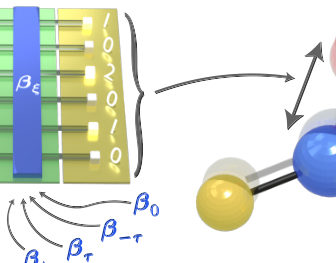
<figcaption class="paper-figure-caption"><b>Fig 1.</b> Figure 1: General schematic of the Gaussian boson sampling (GBS) based framework for kIC. The GBS experiment is performed four times with four different sets of input optical parameters for the squeezing ˆS(Σξ), rotation ˆR(Uξ) and displacement ˆD(βξ) operators. These sets correspond to the expansion coefficient values ξ = {iτ, τ, −τ, 0}. At the final stage of the GBS experiment, the photon-number-resolving detection is employed to reconstruct the photon pattern distributions. The statistics of the four sampling experiments are used to evaluate the non-adiabatic coupling matrix elements |Vi0,fm|2 according to equation (9). As schematically shown in the figure, each photon pattern generated...</figcaption>
</figure>
<figure class="paper-figure-card">
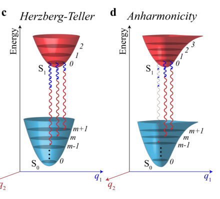
<figcaption class="paper-figure-caption"><b>Fig 2.</b> Figure 2: Schematic representation of internal conversion process in a two-mode system. (a) Internal conversion occurs from the lowest vibrational level of the S1 potential energy surface to highly excited vibrational states of S0 whose total vibrational energy matches the electronic gap ∆fi within a finite energy window of width 2∆E. Contributions from mode 1 and 2 are highlighted in blue and red colours, respectively. Arrow thickness indicates the relative strength of the transition, determined by the corresponding NACME values. (b) Duschinsky rotation mixes the normal modes and modifies the vibrational wavefunction overlaps. (c) Herzberg-Teller contribution introduces coordinate...</figcaption>
</figure>
<figure class="paper-figure-card">
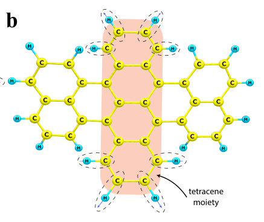
<figcaption class="paper-figure-caption"><b>Fig 3.</b> Figure 3: Graphical representation of the DBT molecule. (a) The C–H bonds involved in the vibrations of normal modes 149-152 are encircled. The corresponding modes are located on the naphthalene moiety of DBT, highlighted in the olive colour. (b) The C–H bonds corresponding to normal modes 158 and 159 are encircled. These modes are located on the tetracene moiety of DBT, highlighted in the pink colour. We note that the distinct C–H bonds contribute to vibrations of multiple normal modes, which are depicted as blue arrows near the Hydrogen atoms.</figcaption>
</figure>
<figure class="paper-figure-card">
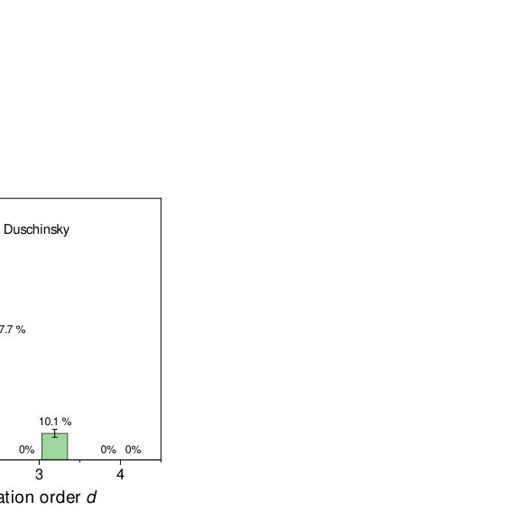
<figcaption class="paper-figure-caption"><b>Fig 4.</b> Figure 4: Exclusive correlated rate fraction R(d) corr(F) across all pathway fragments F with respect to the mode correlation order d for the HT model with and without Duschinsky rotations. Darkened regions on the bars of second order correspond to the highly-correlated rate fractions with g(2) occ(F) &gt; 2.</figcaption>
</figure>
</div>

<p><strong>Summary.</strong> This paper pioneers a method to analyze molecular internal conversion rates by mapping the underlying physics onto the output statistics of Gaussian Boson Sampling. By incorporating effects like Duschinsky rotations, the authors show that GBS can resolve individual vibrational pathways contributing to the decay. This provides a powerful, quantum-enhanced tool for guiding targeted molecular modifications.</p>
<p><strong>Why it may be interesting.</strong> This work is highly relevant to AMO physics and quantum optics as it proposes a novel, quantum-computation-based methodology to solve a fundamental problem in molecular dynamics—non-radiative decay. It bridges quantum simulation techniques (GBS) with chemical physics (vibronic coupling).</p>
<details>
<summary>Detailed structure</summary>
<p><strong>Main problem.</strong> The paper develops a method to perform a pathway-resolved analysis of the internal conversion (IC) rate constant using Gaussian Boson Sampling (GBS). This allows researchers to map the complex molecular dynamics problem onto the photon-number patterns measurable by GBS.</p>
<p><strong>Main result.</strong> The analysis successfully reproduces known IC rates and demonstrates that Duschinsky rotations significantly increase the fraction of IC associated with correlated vibrational pathways from 46% to 86%.</p>
<p><strong>Method.</strong> The core method involves deriving a GBS-compatible mapping for the rate constant, relating the Non-Adiabatic Coupling Matrix Elements (NACMEs) to the output statistics of GBS. This requires complex mathematical machinery involving solving coupled differential equations and applying Takagi factorization.</p>
<p><strong>Model / system.</strong> The physical system is molecular internal conversion (IC) between electronic states, coupled to molecular vibrations. The theoretical framework utilizes Gaussian Boson Sampling (GBS) as the computational platform to probe the vibrational modes responsible for the non-radiative decay.</p>
<p><strong>Key observables.</strong> The primary observable is the rate constant $k_{IC}$, which is reconstructed from the photon-number patterns. Other key observables include the fraction of $k_{IC}$ associated with correlated vibrational pathways and the identification of specific mode combinations.</p>
<p><strong>Important parameters / regimes.</strong> Duschinsky rotations, Herzberg-Teller (HT) contribution, and the vibrational mode coordinates ($q, q'$).</p>
<p><strong>Assumptions / limitations.</strong> The analysis relies on several approximations, including the zero-temperature approximation, the flat-window approximation for the rate equation, and approximating non-unitary parts of the coupling matrix element calculation using linear superpositions of unitary Gaussian operations.</p>
<p><strong>Figures summary.</strong> The notes reference Figure 1, which schematically shows the GBS framework for $k_{IC}$ requiring four sampling runs. Other figures likely illustrate the mathematical derivations of the auxiliary state and the final observable structure.</p>
<p><strong>Paper structure.</strong> The paper progresses from defining the physical problem (IC rate constant) to establishing the mathematical link with GBS (Doktorov operator, NACME). It then details the complex mathematical machinery required to map the non-unitary coupling terms onto Gaussian operations, culminating in the final calculation of the observable $f_m(\xi)$.</p>
</details>
<details>
<summary>Abstract</summary>
<p>Gaussian Boson Sampling (GBS) has provided strong evidence of quantum advantage, motivating the search for real-world applications. Such applications rely on mapping physical problems to the native GBS output: photon-number patterns sampled from a highly non-trivial probability distribution. Here we derive a GBS-compatible mapping for the rate constant $k_\mathrm{IC}$ of internal conversion (IC), incorporating two important physical effects -- Duschinsky rotations and Herzberg--Teller contribution. We validate this framework using sampling \textit{simulations} of dibenzoterrylene, reproducing reported values of $k_\mathrm{IC}$. Beyond $k_\mathrm{IC}$ reconstruction, we show that the photon-number patterns of GBS encode the vibrational mode combinations responsible for the IC process, which we refer to as non-radiative pathways. This pathway-resolved data can then be grouped in different ways to extract multiple physically motivated observables. In particular, it enables $k_\mathrm{IC}$ analysis at several levels, from individual modes and mode family contributions to recurring vibrational configurations shared by multiple pathways. We find that Duschinsky rotations increase the fraction of $k_\mathrm{IC}$ associated with correlated vibrational pathways from 46% to 86%, and identify the mode combinations with the largest rate contributions. These pathway-resolved insights can guide targeted molecular modifications, including selective deuteration and bond substitution, to control non-radiative decay.</p>
</details>
<p><sub><a href="#top">↑ back to top</a></sub></p>

<p><a id="paper-2610.03501"></a></p>
<h3 id="born-rule-in-schroedinger-newton-scenarios-of-semiclassical-gravity"><a href="http://arxiv.org/abs/2610.03501v1">Born rule in Schroedinger-Newton scenarios of semiclassical gravity</a></h3>
<p><strong>Authors:</strong> Tanguy Fontana, Axelle Coulon, Giovanni Manfredi<br>
<strong>Type:</strong> theory · <strong>Category:</strong> other · <strong>PDF:</strong> <a href="https://arxiv.org/pdf/2610.03501v1">https://arxiv.org/pdf/2610.03501v1</a><br>
<strong>Analysis basis:</strong> full PDF text, analyzed in chunks
<strong>Topic relevance:</strong> <code>Keldysh / 2PI / non-Gaussian methods</code> <strong>3/5</strong> · <code>methods for driven-dissipative</code> <strong>2/5</strong> · <code>quantum measurements</code> <strong>2/5</strong> · <code>analog quantum simulation</code> <strong>1/5</strong> · <code>correlated / nonlocal dissipation</code> <strong>1/5</strong> · <code>driven-dissipative phase transition</code> <strong>1/5</strong> · <code>non-equilibrium universality</code> <strong>1/5</strong> · <code>scars &amp; prethermalization</code> <strong>1/5</strong></p>
<div class="figure-strip-hint">↔ Scroll figures horizontally</div>
<div class="paper-figures-scroll">
<figure class="paper-figure-card">
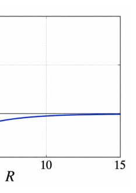
<figcaption class="paper-figure-caption"><b>Fig 1.</b> FIG. 1: Profile of the effective potential U(R) = 1/(2R2) −C/R.</figcaption>
</figure>
<figure class="paper-figure-card">
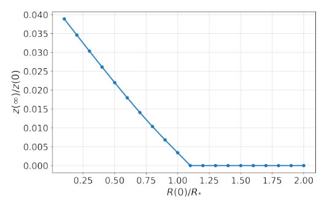
<figcaption class="paper-figure-caption"><b>Fig 2.</b> FIG. 2: Late-time values of z(t), normalized to z(0), as a function of the initial wave-packet width R(0), normalized to R∗. The results are obtained from the analytical solution of Eq. (22), for different evolutions of R(t) corresponding to bound or unbound states.</figcaption>
</figure>
<figure class="paper-figure-card">
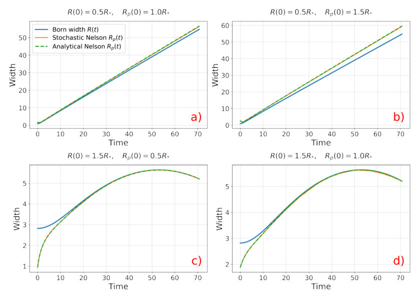
<figcaption class="paper-figure-caption"><b>Fig 3.</b> FIG. 3: Evolutions of R(t) from Eq. (11) (blue lines), Rp(t) from Eq. (20) (dashed green line), and Rp(t) computed from the stochastic Nelson equation (16) (orange lines). The top panels (a) and (b) correspond to unbound cases with R(0) = 0.5R∗, and two different intial values of Rp(0). The bottom panels (c) and (d) correspond to bound cases with R(0) = 1.5R∗, and two different initial values of Rp(0).</figcaption>
</figure>
<figure class="paper-figure-card">
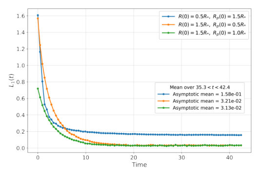
<figcaption class="paper-figure-caption"><b>Fig 4.</b> FIG. 4: L1 norm for one unbound evolution with R(0) = 0.5R∗(blue dots) and two bound evolutions with R(0) = 1.5R∗. The lines connect the dots, which were obtained by simulating the stochastic Nelson process. The lower inset shows the mean of the L1 norm computed between t = 35.3 and t = 42.4.</figcaption>
</figure>
<figure class="paper-figure-card">
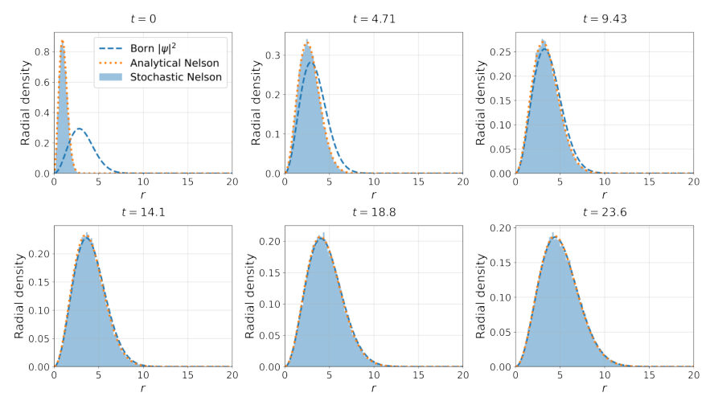
<figcaption class="paper-figure-caption"><b>Fig 5.</b> FIG. 5: Evolution of the probability distributions for a bound case with R(0) = 1.5R∗and Rp(0) = 0.5R∗. We show several snapshots, at different times, of the wavefunction density eρ(r, t) ≡4πr2|Ψ|2 (dashed blue line), particle density eP(r, t) from Nelson’s stochastic process (blue histograms), and Gaussian particle density (19), with Rp(t) computed from Eq. (20) (dot-dashed orange line).</figcaption>
</figure>
</div>

<p><strong>Summary.</strong> This work examines whether semiclassical self-gravity forces a quantum system to obey the Born rule. By modeling the system with the Schrödinger-Newton equations, the authors find that relaxation to the Born rule only happens if the wave packet remains spatially confined. Rapid expansion prevents this relaxation, suggesting that gravity itself can either enforce or violate fundamental quantum principles.</p>
<p><strong>Why it may be interesting.</strong> While focused on gravity, the core mechanism—how the system's dynamics (binding vs. expansion) dictates whether a fundamental principle (the Born rule) is recovered—is highly relevant to open quantum systems and non-equilibrium dynamics.</p>
<details>
<summary>Detailed structure</summary>
<p><strong>Main problem.</strong> The paper investigates the dynamical relaxation of quantum systems towards the Born rule within the framework of semiclassical gravity.</p>
<p><strong>Main result.</strong> Relaxation to the Born rule (quantum equilibrium) occurs only when the wave packet remains bounded; rapid expansion causes persistent deviations from the Born rule.</p>
<p><strong>Method.</strong> The authors used a Gaussian variational ansatz combined with Nelson's stochastic representation to track the evolution of particle ensembles.</p>
<p><strong>Model / system.</strong> The system is governed by the nonlinear Schrödinger-Newton equations (SNEs), which couple quantum dynamics to Newtonian gravity. This model serves as a minimal framework for studying quantum non-equilibrium effects.</p>
<p><strong>Key observables.</strong> The deviation parameter $z(t) = R_p^2/R^2 - 1$ and the $L_1$ norm comparing particle and quantum probability distributions.</p>
<p><strong>Important parameters / regimes.</strong> The initial conditions of the wave packet width $R(0)$ relative to a critical value $R^*$, and the diffusion coefficient $D_Q = \hbar/2m$.</p>
<p><strong>Assumptions / limitations.</strong> The analysis relies on the Gaussian variational approximation and assumes spherical symmetry for the self-gravitating wave packet.</p>
<p><strong>Figures summary.</strong> Figures illustrate the comparison between the wavefunction width $R(t)$ and the particle distribution width $R_p(t)$ for both bound and unbound cases, showing convergence to equilibrium only in the bound regime.</p>
<p><strong>Paper structure.</strong> The paper first introduces the SNEs and the concept of quantum equilibrium. It then uses a variational approach to derive equations of motion for the width parameter. Finally, it employs stochastic simulations (Nelson's approach) to analyze the asymptotic behavior of the deviation from the Born rule based on the wave packet's long-term dynamics.</p>
</details>
<details>
<summary>Abstract</summary>
<p>We investigate dynamical relaxation to the Born rule in a semiclassical gravity model described by the Schrödinger-Newton equations. Using a Gaussian variational solution for the self-gravitating wave packet, combined with Nelson's stochastic representation of quantum dynamics, we track the evolution of particle ensembles whose initial probability distribution differs from $|Ψ|^2$. Relaxation to the Born rule ("quantum equilibrium") occurs when the wave packet remains bounded, or grows sufficiently slowly in time; in contrast, for rapidly expanding solutions of the Schrödinger-Newton equations, deviations from the Born rule can persist indefinitely. Numerical simulations confirm this analytical picture. These results show that semiclassical self-gravity can either enable or inhibit relaxation towards the Born rule, providing a minimal model relevant to proposals of primordial quantum non-equilibrium, as suggested by Underwood and Valentini [Phys. Rev. D 92, 063531 (2015)].</p>
</details>
<p><sub><a href="#top">↑ back to top</a></sub></p>

<p><a id="paper-2610.02400"></a></p>
<h3 id="chiral-vacuum-engineering-of-quantum-hall-matter"><a href="http://arxiv.org/abs/2610.02400v1">Chiral Vacuum Engineering of Quantum Hall Matter</a></h3>
<p><strong>Authors:</strong> Kiran M. Kulkarni, Andrey Baydin, Motoaki Bamba, Junichiro Kono, Ceren B. Dag, Vasil Rokaj<br>
<strong>Type:</strong> theory · <strong>Category:</strong> other · <strong>PDF:</strong> <a href="https://arxiv.org/pdf/2610.02400v1">https://arxiv.org/pdf/2610.02400v1</a><br>
<strong>Analysis basis:</strong> full PDF text, analyzed in chunks
<strong>Topic relevance:</strong> <code>analog quantum simulation</code> <strong>3/5</strong> · <code>Keldysh / 2PI / non-Gaussian methods</code> <strong>2/5</strong> · <code>Tavis-Cummings &amp; cavity-many-emitter</code> <strong>2/5</strong> · <code>methods for driven-dissipative</code> <strong>2/5</strong> · <code>correlated / nonlocal dissipation</code> <strong>1/5</strong> · <code>driven-dissipative phase transition</code> <strong>1/5</strong> · <code>interference shaping light</code> <strong>1/5</strong></p>
<div class="figure-strip-hint">↔ Scroll figures horizontally</div>
<div class="paper-figures-scroll">
<figure class="paper-figure-card">
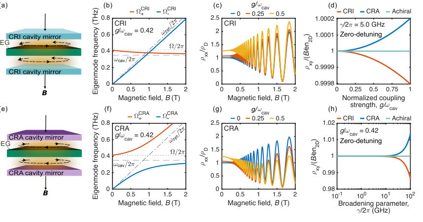
<figcaption class="paper-figure-caption"><b>Fig 1.</b> FIG. 1. (a),(e) A 2DEG in a chiral cavity confining right- and left-circularly polarized light, respectively. (b) Eigenspectrum of the CRI Hamiltonian: the two chiral-vacuum-dressed modes cross, with the cavity-like branch renormalized to Ω= ωcav + g2/ωcav by the diamagnetic term and the cyclotron-like branch by the vacuum Bloch–Siegert shift. (f) Eigenspectrum of the CRA Hamiltonian: two polariton branches with avoided crossing. (c), (g) Longitudinal resistivity vs. magnetic field B for various coupling strengths, for the CRI and CRA systems, respectively, normalized by the Drude resistivity ρD = m∗γ/(n2De2), where n2D = 2 × 1011 cm−2. We observe Shubnikov de Haas (SdH) oscillations as a...</figcaption>
</figure>
<figure class="paper-figure-card">
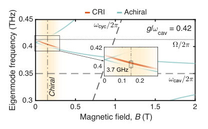
<figcaption class="paper-figure-caption"><b>Fig 2.</b> FIG. 3. Predicted THz eigenspectrum for the chiral cavity of Ref. [20]. The chiral cavity, designed for B = 0.15 T remains functional over B = 0.05–0.25 T (shaded region). Within this range, it follows the CRI Hamiltonian and exhibits a single chiral-vacuum-dressed cavity mode shifted by ∼3.7 GHz; out- side it, the achiral three-mode spectrum is recovered. The inset zooms in on the CRI mode at the operational field. The parameters are ωcav/2π = 0.35 THz with a normalized cou- pling strength of g/ωcav ∼0.42, and a 10-quantum-well GaAs heterostructure with an electron density of 5 ×1011 cm−2 per quantum well, and an effective electron mass m∗= 0.067 me (SM). The dashed, dotted, and...</figcaption>
</figure>
<figure class="paper-figure-card">
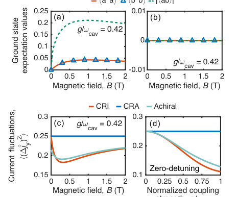
<figcaption class="paper-figure-caption"><b>Fig 3.</b> FIG. 2. (a), (b) Photon ⟨a†a⟩and matter ⟨b†b⟩ground state populations and squeezing correlation ⟨ˆaˆb⟩of the CRI and CRA systems, respectively, finite for the two-mode squeezed vacuum. CRA ground state populations vanish identically, consistent with the bare vacuum. (c) Current fluctuations versus magnetic field for g/ωcav = 0.42. The CRI current fluctuations fall below the bare vacuum limit (1/4), reflecting the two-mode squeezed ground state, while the CRA case remains at 1/4. (d) Current fluctuations at zero-detuning versus coupling, g/ωcav.</figcaption>
</figure>
</div>

<p><strong>Summary.</strong> This theoretical study examines the interaction between a 2DEG in a quantum Hall state and a chiral cavity field. By analyzing the Hamiltonian, the authors predict distinct spectroscopic and transport signatures for co-rotating versus counter-rotating light polarizations. The key findings include a handedness-dependent correction to the Hall resistivity and the detection of squeezed ground states via current fluctuations.</p>
<p><strong>Why it may be interesting.</strong> This work directly bridges cavity QED concepts (chiral coupling, polaritons) with condensed matter phenomena (Quantum Hall effect, transport), providing a framework to observe fundamental symmetries (SU(2), SU(1,1)) in solid-state systems.</p>
<details>
<summary>Detailed structure</summary>
<p><strong>Main problem.</strong> The paper investigates how coupling a two-dimensional electron gas (2DEG) in a quantum Hall regime to a chiral cavity vacuum modifies its electronic and transport properties.</p>
<p><strong>Main result.</strong> Chiral coupling leads to distinct signatures for co-rotating and counter-rotating helicities, including vacuum Rabi splitting, mode crossing, and a handedness-dependent correction to the Hall resistivity.</p>
<p><strong>Method.</strong> The analysis employs theoretical techniques, including diagonalizing the Pauli-Fierz Hamiltonian, using the Kubo formula for conductivity, and analyzing current-current correlators.</p>
<p><strong>Model / system.</strong> The system models a 2DEG subjected to a strong magnetic field, coupled to a circularly polarized (chiral) cavity mode. The Hamiltonian is analyzed by separating center-of-mass and relative motion components.</p>
<p><strong>Key observables.</strong> Hall resistivity ($
ho_{xy}$), longitudinal resistivity ($
ho_{xx}$), Shubnikov-de Haas (SdH) oscillations, and current quadrature variance ($\langle(\Delta j_y)^2
angle$).</p>
<p><strong>Important parameters / regimes.</strong> Coupling strength ($ar{g}$), cavity detuning ($\omega_{cav}$), cyclotron frequency ($\omega_{cyc}$), and magnetic field ($B$).</p>
<p><strong>Assumptions / limitations.</strong> The analysis relies on the Kubo formula and approximations such as the $\gamma$ expansion for small broadening, and the separation of CM motion.</p>
<p><strong>Figures summary.</strong> Figures illustrate the eigenspectra for co-rotating (avoided crossing) and counter-rotating (mode crossing) helicities, and show the dependence of $
ho_{xx}$ and $
ho_{xy}$ on magnetic field and coupling strength.</p>
<p><strong>Paper structure.</strong> The paper develops the Hamiltonian for chiral coupling, diagonalizes it to find polariton modes, and then calculates the DC conductivities and resistivities using the Kubo formula, comparing chiral vs. achiral cases.</p>
</details>
<details>
<summary>Abstract</summary>
<p>We reveal that a chiral cavity distinguishes the resonant and antiresonant interactions between a two-dimensional electron gas and the cavity vacuum. For co-rotating helicities, the modes anticross, exhibiting vacuum Rabi splitting, and retain a bare vacuum ground state. For counter-rotating helicities, the modes cross, acquiring vacuum-mediated energy shifts and a two-mode squeezed ground state. We trace the origin of these observations to the SU(2) and SU(1,1) symmetries of the respective Hamiltonians and present their spectroscopic signatures in chiral photonic crystal cavities. We further predict that cavity chirality produces a handedness-dependent correction to Hall resistivity at finite polariton broadening, while such a correction is not present in an achiral cavity. For the longitudinal resistivity, we find an asymmetric response of the Shubnikov--de Haas oscillations for the different helicities. Finally, we present an experimentally accessible route for detecting the squeezed ground state through current fluctuations. Parameters based on a recently demonstrated terahertz chiral cavity place these effects within experimental reach.</p>
</details>
<p><sub><a href="#top">↑ back to top</a></sub></p>

<p><a id="paper-2610.03064"></a></p>
<h3 id="analytical-controls-for-dispersive-multi-qubit-interactions-in-mediator-coupled-quantum-registers"><a href="http://arxiv.org/abs/2610.03064v1">Analytical controls for dispersive multi-qubit interactions in mediator-coupled quantum registers</a></h3>
<p><strong>Authors:</strong> Bora Baran, Tommaso Calarco, James O'Sullivan, Matthias M. Müller, Felix Motzoi<br>
<strong>Type:</strong> theory · <strong>Category:</strong> other · <strong>PDF:</strong> <a href="https://arxiv.org/pdf/2610.03064v1">https://arxiv.org/pdf/2610.03064v1</a><br>
<strong>Analysis basis:</strong> full PDF text, analyzed in chunks
<strong>Topic relevance:</strong> <code>methods for driven-dissipative</code> <strong>3/5</strong> · <code>analog quantum simulation</code> <strong>2/5</strong> · <code>Keldysh / 2PI / non-Gaussian methods</code> <strong>1/5</strong> · <code>Tavis-Cummings &amp; cavity-many-emitter</code> <strong>1/5</strong> · <code>correlated / nonlocal dissipation</code> <strong>1/5</strong> · <code>driven-dissipative phase transition</code> <strong>1/5</strong> · <code>quantum measurements</code> <strong>1/5</strong></p>
<div class="figure-strip-hint">↔ Scroll figures horizontally</div>
<div class="paper-figures-scroll">
<figure class="paper-figure-card">
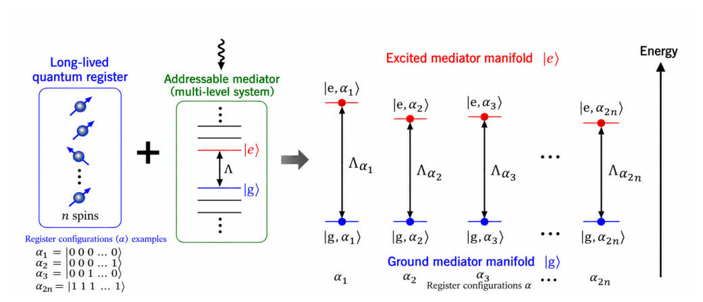
<figcaption class="paper-figure-caption"><b>Fig 1.</b> FIG. 1: Schematic of a register-dependent mediator transition. The register configurations α imprint themselves on the mediator transition, producing configuration-dependent transition frequencies Λα and thereby enabling conditional manipulation through the mediator spectrum.</figcaption>
</figure>
<figure class="paper-figure-card">
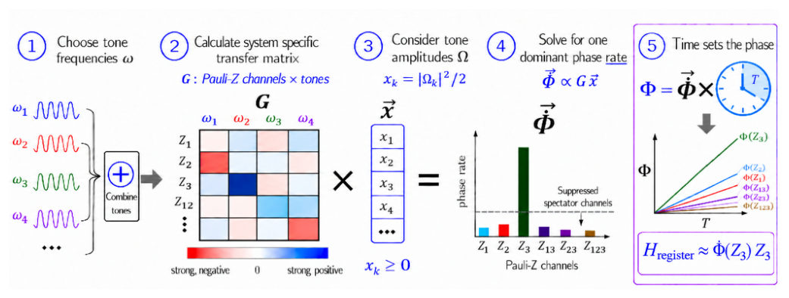
<figcaption class="paper-figure-caption"><b>Fig 2.</b> FIG. 2: Schematic of the desired DIAL control situation for a favorable combination of tone frequencies. (1) A suitably chosen set of off-resonant tone frequencies {ωk} defines the available controls. (2) Together with the register-resolved transition spectrum, this tone set determines the transfer matrix G, which encodes how the available controls contribute across the Pauli-Z interaction channels. (3) The non-negative drive-intensity vector x = (x1, . . . , xM)T weights the selected tones within the admissible intensity range. (4) For a favorable tone set, the available tone intensities can generate a phase-rate spectrum ˙Φ ∝Gx with a strong target channel and suppressed spectator...</figcaption>
</figure>
<figure class="paper-figure-card">
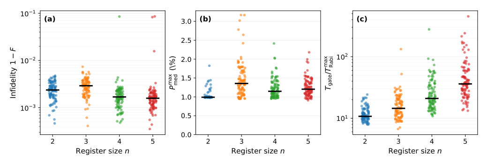
<figcaption class="paper-figure-caption"><b>Fig 3.</b> FIG. 3: Direct DIAL synthesis across random register spectra and different register sizes. (a) Full-dynamics infidelity 1 −F of the DIAL controls for n = 2, 3, 4, 5, shown on a logarithmic scale. Each point represents one sampled register spectrum and targets the highest-order interaction Z1 · · · Zn at |Φtar Z1···Zn| = π/4. The higher-infidelity outlier can be explained by an exceptionally crowded register spectrum. (b) Maximum transient mediator excitation P max med for the same controls, with the individual realizations retained. (c) Gate duration normalized by the Rabi period of the strongest applied tone, T max Rabi = 2π/Ωmax, with Ωmax = maxk |Ωk|. Horizontal bars indicate medians and...</figcaption>
</figure>
<figure class="paper-figure-card">
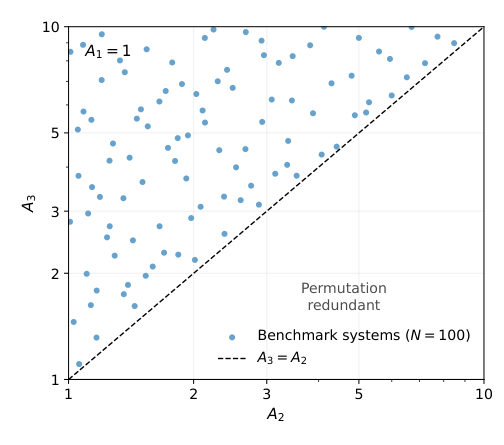
<figcaption class="paper-figure-caption"><b>Fig 4.</b> FIG. 4: Distribution of the n = 3 transition spectra used in the direct DIAL benchmark, shown as a two-dimensional example of the normalized n-spin benchmark ensemble. The relative spectral contributions are normalized by A1 = 1 and ordered as 1 = A1 ≤A2 ≤A3 ≤10. Both axes are logarithmic, matching the sampling of the relative spectral contributions. The region A3 &lt; A2 is permutation redundant: the ratios A2/A1 and A3/A1 specify the relative spectral contributions that determine the transition spectrum, so exchanging register-spin labels 2 ↔3 only swaps these ratios and does not produce a physically distinct system.</figcaption>
</figure>
<figure class="paper-figure-card">
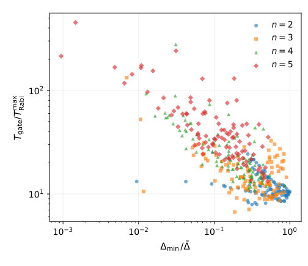
<figcaption class="paper-figure-caption"><b>Fig 5.</b> FIG. 5: Normalized gate duration Tgate/T max Rabi versus the relative minimum transition spacing ∆min/ ¯∆for the random n = 2, 3, 4, 5 realizations used in the direct DIAL benchmark. Both axes are logarithmic. Small relative minimum spacing identifies spectra containing an unusually close pair of register-resolved transition lines. Spectrally crowded realizations extend toward longer normalized gate durations, connecting the spectral resolution of the register transitions to the interaction rate achieved by the selective dispersive construction.</figcaption>
</figure>
</div>

<p><strong>Summary.</strong> This paper introduces the Dispersive Interaction via Analytical Linear Inversion (DIAL) technique to engineer controlled multi-qubit gates in quantum registers coupled to a mediator. By operating in the dispersive regime, the method achieves high gate fidelities while minimizing unwanted mediator excitation. The work is significant because it provides an analytical, non-iterative control design that is robust against practical imperfections like basis mismatch.</p>
<p><strong>Why it may be interesting.</strong> This work provides a powerful, non-iterative analytical tool for designing quantum gates in complex, open quantum systems, directly addressing the practical limitations of decoherence and leakage in solid-state and atomic quantum hardware.</p>
<details>
<summary>Detailed structure</summary>
<p><strong>Main problem.</strong> The challenge is to engineer fast, controlled multi-qubit interactions in quantum registers coupled to a mediator while simultaneously suppressing decoherence and leakage associated with exciting the mediator.</p>
<p><strong>Main result.</strong> The proposed DIAL algorithm achieves high gate fidelities (&gt;0.997) while keeping transient mediator excitation very low (&lt;1%), demonstrating a robust, analytically derived control scheme.</p>
<p><strong>Method.</strong> The authors introduce Analytical Linear Inversion (DIAL), which exploits the linear dependence of interaction rates on drive intensities in the dispersive regime to map control pulses directly to desired multi-qubit interactions.</p>
<p><strong>Model / system.</strong> The system involves a quantum register coupled to an auxiliary mediator degree of freedom. The control is implemented via off-resonant driving, operating in the dispersive regime to induce state-dependent Pauli-Z interactions.</p>
<p><strong>Key observables.</strong> Gate fidelities (target &gt;0.997), maximum transient mediator excitation (target &lt;1%), and the resulting multi-qubit interaction phase.</p>
<p><strong>Important parameters / regimes.</strong> Dispersive regime condition ($\Omega \ll \Delta$), the mismatch parameter ($\eta$), and the target interaction order ($Z_1...Z_n$).</p>
<p><strong>Assumptions / limitations.</strong> The primary assumptions are operating in the dispersive, configuration-preserving regime ($\eta=0$) and that the interaction rates exhibit a direct linear dependence on drive intensities.</p>
<p><strong>Figures summary.</strong> Figures illustrate the performance of the controls under basis mismatch ($\eta 
eq 0$), showing a clear degradation of fidelity while mediator excitation remains low, and plot the trade-off between spectral crowding and required gate time.</p>
<p><strong>Paper structure.</strong> The paper first introduces the DIAL method for achieving controlled interactions. It then benchmarks this method across multiple register sizes and targets. Subsequent sections analyze the robustness of the controls by testing performance under controlled basis mismatches ($\eta 
eq 0$) and spectral crowding.</p>
</details>
<details>
<summary>Abstract</summary>
<p>Fast control of long-lived quantum registers often relies on an auxiliary degree of freedom, a mediator, but real mediator excitation can introduce decoherence, leakage, or loss when the mediator is not the coherence-optimized component. We introduce dispersive interaction via analytical linear inversion (DIAL), an analytical control construction for excitation-suppressed interaction engineering in mediator-coupled quantum registers. In the dispersive regime, we show that off-resonant driving of an effective two-level mediator transition yields a diagonal Hamiltonian whose Pauli-\(Z\) interaction rates depend linearly on the drive intensities through a transfer matrix determined by the register-resolved transition spectrum. This establishes a direct linear map from experimentally accessible controls to induced multi-qubit interactions, enabling control design without iterative propagation of the full driven dynamics. We turn this structure into the target-aware DIAL algorithm, which selects favorable off-resonant tones and determines their drive intensities for a prescribed target interaction. We benchmark the resulting controls across 100 register realizations for each register size \(n=2,3,4,5\), targeting the highest-order interaction \(Z_1\cdots Z_n\) with an interaction phase of magnitude \(π/4\), which generates an \(n\)-qubit GHZ state up to local equivalence. Propagation under the full driven mediator-register dynamics yields typical gate fidelities above \(0.997\), while the maximum transient mediator excitation remains near \(1\%\) on average, far below what is typically possible with resonant Rabi drives. The manuscript is accompanied by an open-source Python package implementing the target-aware DIAL algorithm and the associated numerical validation workflow.</p>
</details>
<p><sub><a href="#top">↑ back to top</a></sub></p>

<p><a id="paper-2610.02980"></a></p>
<h3 id="einstein-langevin-source-correlations-in-closed-non-relativistic-systems"><a href="http://arxiv.org/abs/2610.02980v1">Einstein--Langevin source correlations in closed non-relativistic systems</a></h3>
<p><strong>Authors:</strong> Peng Xu, Li-E Qiang<br>
<strong>Type:</strong> theory · <strong>Category:</strong> other · <strong>PDF:</strong> <a href="https://arxiv.org/pdf/2610.02980v1">https://arxiv.org/pdf/2610.02980v1</a><br>
<strong>Analysis basis:</strong> full PDF text, analyzed in chunks
<strong>Topic relevance:</strong> <code>Keldysh / 2PI / non-Gaussian methods</code> <strong>3/5</strong> · <code>correlated / nonlocal dissipation</code> <strong>3/5</strong> · <code>methods for driven-dissipative</code> <strong>2/5</strong> · <code>quantum measurements</code> <strong>2/5</strong></p>
<div class="figure-strip-hint">↔ Scroll figures horizontally</div>
<div class="paper-figures-scroll">
<figure class="paper-figure-card">
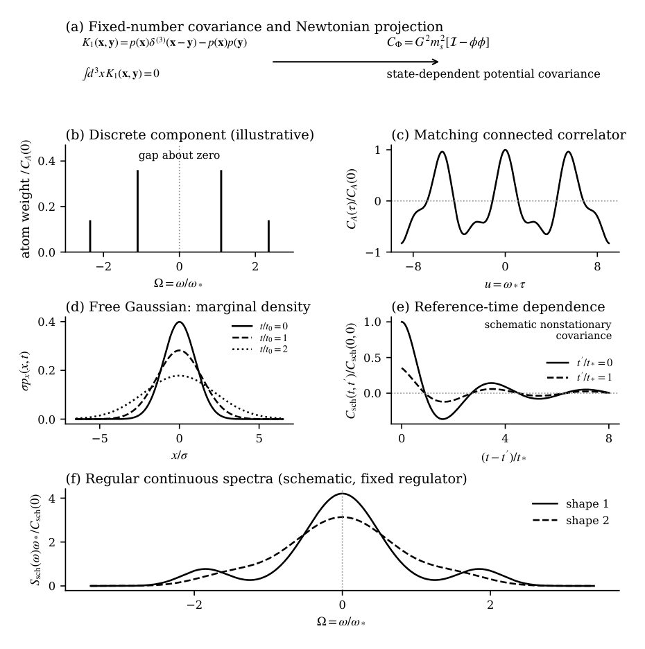
<figcaption class="paper-figure-caption"><b>Fig 1.</b> FIG. 1. Schematic spatial and temporal content of the source calculation. (a) The fixed-number density covariance and its Newtonian projection. (b,c) A matching discrete spectral component and even correlator; sticks denote atom weights. An isolated eigenstate can also have transitions to a continuum. (d) The Gaussian one-dimensional marginal at t/t0 = 0, 1, 2, where t0 = 2msσ2/ℏ. (e) The positive kernel Csch(t, t′)/Csch(0, 0) = a(v)a(v′) cos[1.75(v −v′)], with v = t/t∗, a(v) = (1+v2)−3/4, arbitrary t∗&gt; 0 and t′/t∗= 0, 1. (f) Positive even spectral shapes with equal integrated variance and different values at zero. Panels (e,f) are illustrative, not calculated source kernels or...</figcaption>
</figure>
</div>

<p><strong>Summary.</strong> This theoretical work analyzes source correlations in non-relativistic quantum systems coupled to gravity using the Einstein–Langevin formalism. The authors demonstrate that the resulting source covariance differs from the universal predictions of the Diósi–Penrose model. The findings establish stringent conditions on the source and probe dynamics required to relate source fluctuations to matter decoherence.</p>
<p><strong>Why it may be interesting.</strong> It provides a rigorous theoretical framework for understanding how quantum gravity fluctuations (modeled via EL noise) manifest as decoherence, offering concrete, testable predictions that challenge universal assumptions found in simpler models like the DP model.</p>
<details>
<summary>Detailed structure</summary>
<p><strong>Main problem.</strong> The paper investigates the relationship between source fluctuations in closed non-relativistic quantum systems and the resulting matter-decoherence model, specifically comparing derived source covariance to predictions from the Diósi–Penrose model.</p>
<p><strong>Main result.</strong> The connected one-particle covariance is shown to be state-dependent and differs from the universal potential-noise law postulated in the Diósi–Penrose model, and the long-time dephasing slope vanishes for certain preparations.</p>
<p><strong>Method.</strong> The authors use the Einstein–Langevin framework to calculate the source covariance, analyze spectral measures, and examine the decay of coherence using various source preparations (e.g., localized free sources, stationary doublets).</p>
<p><strong>Model / system.</strong> The system involves closed, particle-number-conserving non-relativistic sources coupled to gravity, analyzed via the stochastic semiclassical gravity approach. The analysis compares the derived source spectrum to the predictions of the Diósi–Penrose model.</p>
<p><strong>Key observables.</strong> Connected one-particle covariance, source spectral measure, probe dephasing exponent, and the long-time slope of the dephasing rate.</p>
<p><strong>Important parameters / regimes.</strong> Finite-variance source operator, isolated non-degenerate eigenstate, and the specific noise law prescribed for the static probe.</p>
<p><strong>Assumptions / limitations.</strong> The analysis requires specifying the source covariance, gravitational response, and probe dynamics separately; continuum results depend on preparation, normalization, and the order of limits.</p>
<p><strong>Figures summary.</strong> Figure 1 provides a schematic summary of equal-time and unequal-time results, and Table I compares derived and unsmeared DP potential-noise kernels.</p>
<p><strong>Paper structure.</strong> The paper develops the source covariance calculation, compares it to the DP model, analyzes the spectral properties for different source preparations (eigenstate, Gaussian), and concludes by establishing the necessary assumptions to link source fluctuations to matter-decoherence.</p>
</details>
<details>
<summary>Abstract</summary>
<p>Stochastic semiclassical gravity represents stress--energy fluctuations through the Einstein--Langevin noise kernel. We examine its Newtonian projection for specified closed, particle-number-conserving non-relativistic sources and distinguish the source covariance from a reduced matter channel. The connected one-particle covariance is state dependent and differs from the universal potential-noise law postulated in the Diósi--Penrose model. To relate the source spectrum to dephasing, we define a separate static probe subject to a prescribed Gaussian noise law. For a finite-variance source operator in an isolated non-degenerate eigenstate, the full connected spectral measure has a gap around zero. The probe dephasing exponent is then bounded and its long-time slope vanishes. Stationary doublets can instead carry static or low-frequency spectral lines, while a specified freely spreading Gaussian source gives a finite limiting exponent. Continuum results depend on preparation, normalisation, infrared regularisation and the order of limits. We also compare coherent and incoherent many-body preparations and establish no-signalling for fixed classical-noise channels. These results identify the spatial, temporal and dynamical assumptions needed to relate source fluctuations to a matter-decoherence model. They do not exclude Markovian limits in other number-conserving non-relativistic preparations.</p>
</details>
<p><sub><a href="#top">↑ back to top</a></sub></p>

<p><a id="paper-2610.02313"></a></p>
<h3 id="how-quantum-is-bottomonium-in-the-quark-gluon-plasma"><a href="http://arxiv.org/abs/2610.02313v1">How Quantum Is Bottomonium in the Quark-Gluon Plasma?</a></h3>
<p><strong>Authors:</strong> Nora Brambilla, Tom Magorsch<br>
<strong>Type:</strong> theory · <strong>Category:</strong> statistical mechanics · <strong>PDF:</strong> <a href="https://arxiv.org/pdf/2610.02313v1">https://arxiv.org/pdf/2610.02313v1</a><br>
<strong>Analysis basis:</strong> full PDF text, analyzed in chunks
<strong>Topic relevance:</strong> <code>methods for driven-dissipative</code> <strong>3/5</strong> · <code>Keldysh / 2PI / non-Gaussian methods</code> <strong>2/5</strong> · <code>correlated / nonlocal dissipation</code> <strong>1/5</strong> · <code>driven-dissipative phase transition</code> <strong>1/5</strong> · <code>non-equilibrium universality</code> <strong>1/5</strong> · <code>quantum measurements</code> <strong>1/5</strong> · <code>scars &amp; prethermalization</code> <strong>1/5</strong></p>
<div class="figure-strip-hint">↔ Scroll figures horizontally</div>
<div class="paper-figures-scroll">
<figure class="paper-figure-card">
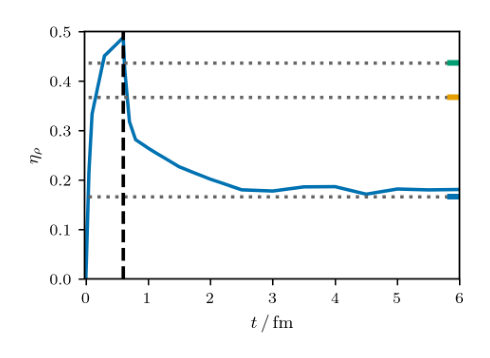
<figcaption class="paper-figure-caption"><b>Fig 1.</b> FIG. 1. The time evolution of the negativity ηρ for the con- ditional ℓ= 0 singlet state ρs|0 within a Bjorken medium. The state is initialized as a compact Gaussian and evolved with the vacuum Hamiltonian until 0.6 fm, where the thermal medium is switched on as indicated by the black dashed line. The dotted horizontal lines indicate the negativity of the 1S (blue), 2S (orange) and 3S (green) bound states.</figcaption>
</figure>
<figure class="paper-figure-card">
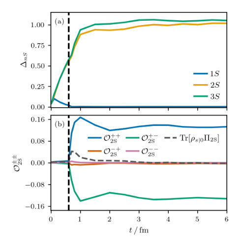
<figcaption class="paper-figure-caption"><b>Fig 2.</b> FIG. 2. (a) The time evolution of the sensitivity ∆nS of the bound-state overlaps Tr[ρs|0ΠnS] to the negative regions of the Wigner distribution. (b) The time evolution of the in- dividual terms in the overlap decomposition O±± 2S for the 2S state including their sum Tr[ρs|0Π2S].</figcaption>
</figure>
<figure class="paper-figure-card">
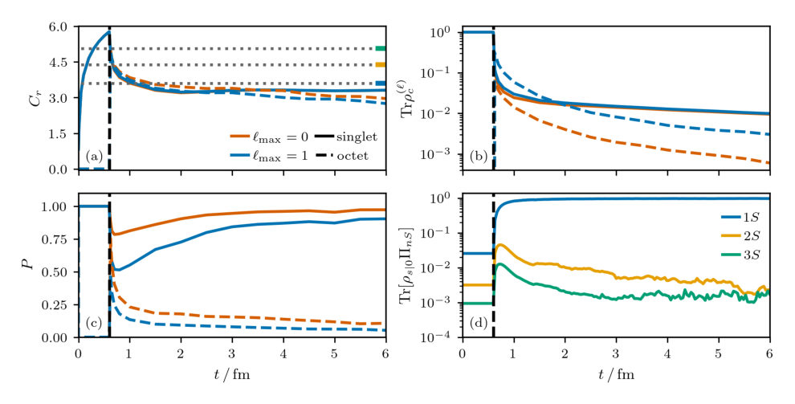
<figcaption class="paper-figure-caption"><b>Fig 3.</b> FIG. 3. The time evolution of (a) the position space coherence Cr, (b) the trace of the individual blocks Trρ(ℓ) c , (c) the purity P and (d) the overlaps of the conditional color singlet ℓ= 0 sector with the bound states Tr[ρs|0ΠnS]. Panels (a) and (c) involve the normalized conditional density matrix ρc|ℓmax for ℓmax = 0 and ℓmax = 1 for the singlet (solid) and octet (dashed). Panel (b) shows the populations of the unnormalized blocks ρ(ℓ) c , with the colors denoting ℓ= 0, 1. The dotted horizontal lines in (a) indicate the position space coherence Cr of the 1S, 2S, and 3S states.</figcaption>
</figure>
</div>

<p><strong>Summary.</strong> This paper models the quantum evolution of bottomonium in the Quark-Gluon Plasma using an open quantum system approach. By analyzing the Wigner transform and its negativity, the authors demonstrate that while the medium drives the system toward classical behavior, a residual quantum structure persists. This finding suggests that classicalization in such environments is partial and highly dependent on the specific observable measured.</p>
<p><strong>Why it may be interesting.</strong> This work directly addresses the non-equilibrium dynamics of quantum systems in extreme matter, providing quantitative diagnostics (like Wigner negativity) to test the breakdown of classical descriptions in heavy-ion collisions.</p>
<details>
<summary>Detailed structure</summary>
<p><strong>Main problem.</strong> The study investigates how much quantum structure bottomonium retains while evolving through the Quark-Gluon Plasma (QGP). This tests the limits of classical approximations in strongly coupled, non-equilibrium quantum systems.</p>
<p><strong>Main result.</strong> The medium causes partial classicalization, suppressing quantum measures like Wigner negativity and coherence. However, a finite residual quantum structure remains, preferentially driving the system toward the tightly bound 1S state.</p>
<p><strong>Method.</strong> The authors use the open quantum system framework, simulating the Lindblad equation derived from potential non-relativistic QCD (pNRQCD) in the quantum Brownian regime.</p>
<p><strong>Model / system.</strong> The system is bottomonium ($    ext{b}ar{  ext{b}}$) evolving in the QGP, modeled via the pNRQCD Lindblad equation. The analysis focuses on the time evolution of the density matrix ($
ho_c$) and its Wigner transform.</p>
<p><strong>Key observables.</strong> Wigner negativity ($\eta$) as a measure of nonclassicality, position-space coherence ($C_r$), and the survival probabilities/overlaps with $1S, 2S, 3S$ bound states.</p>
<p><strong>Important parameters / regimes.</strong> Simulation parameters include a Bjorken medium, initial temperatures ($T_0 = 425 	ext{ MeV}$), and time evolution down to lower temperatures.</p>
<p><strong>Assumptions / limitations.</strong> The analysis tests the validity of classical Langevin-type approximations by calculating Wigner negativity, which requires assuming the Wigner distribution is non-negative.</p>
<p><strong>Figures summary.</strong> Figures illustrate the time evolution of negativity ($\eta$) for different states, showing suppression and plateaus. Other figures compare the Wigner transform to the exact density matrix diagonal and track coherence/purity over time.</p>
<p><strong>Paper structure.</strong> The paper establishes the theoretical framework using the Lindblad equation and Wigner transform, analyzes the time evolution of quantum measures (negativity, coherence), and concludes by interpreting the residual structure via 'conditional purification' towards the ground state.</p>
</details>
<details>
<summary>Abstract</summary>
<p>We study how much quantum structure bottomonium retains during its evolution in the quark-gluon plasma. Within the open quantum system framework, we simulate the Lindblad equation obtained from potential nonrelativistic QCD in the quantum Brownian regime. From the resulting real-time evolution of the bottomonium density matrix, we compute the Wigner transform and study its negativity as a measure of nonclassicality and a test of a key condition underlying classical Langevin-type approximations. We find that the medium suppresses the negativity, which nevertheless approaches a finite plateau close to that of the $1\mathrm{S}$ state. The overlaps with the excited $2\mathrm{S}$ and $3\mathrm{S}$ states arise from near-canceling positive and negative phase-space contributions, driven by negative regions in the Wigner transforms of the bound-state projectors, while the $1\mathrm{S}$ overlap is insensitive to such contributions. We further show that the position-space coherence is similarly suppressed and plateaus close to the 1S value. We trace the finite residual quantum structure to conditional purification: the medium preferentially dissolves weakly bound and unbound modes with large $\langle r^2\rangle$, driving the surviving singlet $\mathrm{S}$-wave ensemble toward the $1\mathrm{S}$ state. More broadly, these results reveal that classicalization is partial and observable dependent, a feature that is relevant across applications of open quantum system methods in fundamental physics.</p>
</details>
<p><sub><a href="#top">↑ back to top</a></sub></p>

<p><a id="paper-2610.03696"></a></p>
<h3 id="maximum-entropy-extension-of-quantum-correlation-functions-from-short-real-time-dynamics"><a href="http://arxiv.org/abs/2610.03696v1">Maximum-Entropy Extension of Quantum Correlation Functions from Short Real-Time Dynamics</a></h3>
<p><strong>Authors:</strong> Filippo Maria Gambetta, Sabrina Yue Wang, Raul A. Santos<br>
<strong>Type:</strong> theory · <strong>Category:</strong> statistical mechanics · <strong>PDF:</strong> <a href="https://arxiv.org/pdf/2610.03696v1">https://arxiv.org/pdf/2610.03696v1</a><br>
<strong>Analysis basis:</strong> full PDF text, analyzed in chunks
<strong>Topic relevance:</strong> <code>Keldysh / 2PI / non-Gaussian methods</code> <strong>3/5</strong> · <code>methods for driven-dissipative</code> <strong>3/5</strong> · <code>analog quantum simulation</code> <strong>1/5</strong> · <code>correlated / nonlocal dissipation</code> <strong>1/5</strong> · <code>driven-dissipative phase transition</code> <strong>1/5</strong> · <code>non-equilibrium universality</code> <strong>1/5</strong></p>
<div class="figure-strip-hint">↔ Scroll figures horizontally</div>
<div class="paper-figures-scroll">
<figure class="paper-figure-card">
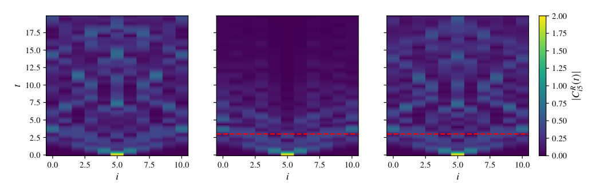
<figcaption class="paper-figure-caption"><b>Fig 1.</b> FIG. 1. Comparison between exact (left), pairwise meAR (middle), and meVAR (right) space-time dynamics of the absolute value of 𝐶𝑅 𝑖5(𝑡). meAR and meVAR signals have been extended from 𝑡= 3.0 (red dashed line). In meVAR we have included all the 11 sites of the chain, i.e., all the 121 correlators. Here, the sampling interval is Δ𝑡= 0.2. Note that the pairwise meAR reconstruction (middle) is able to faithfully reproduce the original signal only up to 𝑡≈5, with a relative 𝐿2 error ∥𝐶𝑅 exact −𝐶𝑅 meAR∥2/∥𝐶𝑅 exact∥2 = 0.84 over the space-time region shown in the plot. On the other hand, meVAR is able to accurately capture all the non-trivial features of the exact signal up to 𝑡= 20 (and even...</figcaption>
</figure>
<figure class="paper-figure-card">
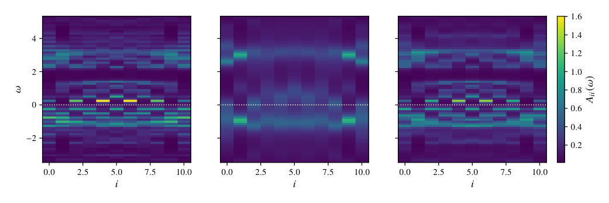
<figcaption class="paper-figure-caption"><b>Fig 2.</b> FIG. 2. Local density of states 𝐴𝑖𝑖(𝜔) obtained from the extension of 𝐶𝑅 𝑖𝑖(𝑡). Left: exact. Middle: pairwise meAR. Right: 11-site meVAR. The spectral function has been obtained from the Fourier transform of the exact and extended signals with 𝑡= 50. Both meAR and meVAR results have been obtained from extensions from 𝑡= 3.0. Pairwise meAR (middle) provides a smooth reconstruction of the exact LDoS, with a relative 𝐿2 error ∥𝐴exact −𝐴meAR∥2/∥𝐴exact∥2 = 0.53 over the space-frequency region shown in the plot. On the other hand, the LDoS obtained from meVAR accurately reproduces all the features of the exact LDoS, with a relative 𝐿2 error ∥𝐴exact −𝐴meVAR∥2/∥𝐴exact∥2 = 0.34 over the...</figcaption>
</figure>
<figure class="paper-figure-card">
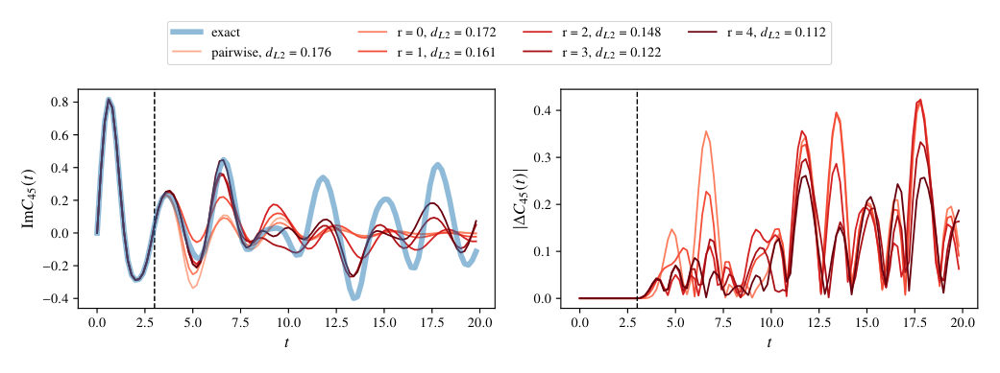
<figcaption class="paper-figure-caption"><b>Fig 3.</b> FIG. 3. Comparison between the extensions of 𝐶𝑅 45(𝑡) obtained via pairwise meAR and meVAR for 𝐶𝑅 45(𝑡). Note that 𝐶𝑅 45(𝑡) is purely imaginary. In both cases, the correlator has been extended from 𝑡= 3.0 (vertical dashed line). Left: plot of Im𝐶𝑅 45(𝑡); Right: absolute error of the extended correlator with respect to the exact one, Δ𝐶𝑅(𝑡) = |𝐶𝑅 ext(𝑡) −𝐶𝑅 exact(𝑡)|. Here, the exact dynamics is plotted in blue, while the red curves denote extensions obtained through pairwise meAR and meVAR including sites with an increasing distance 𝑟from the initial ones. That is, with 𝑟= 0, 𝑖, 𝑗∈{4, 5}, with 𝑟= 1, 𝑖, 𝑗∈{3, 4, 5, 6}, and so on. For 𝑟= 4, all the 11 sites (corresponding to 121 correlators)...</figcaption>
</figure>
<figure class="paper-figure-card">
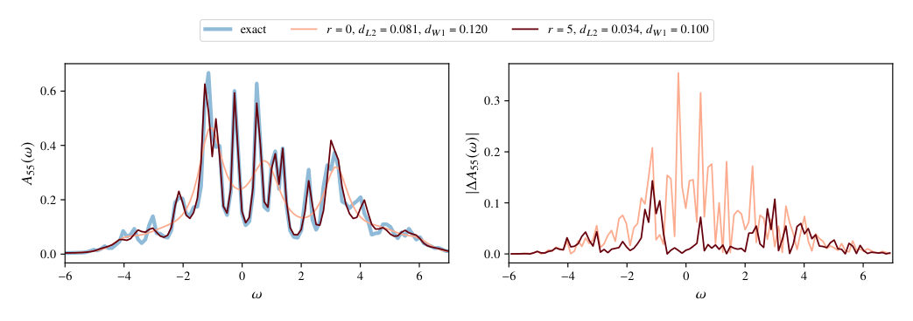
<figcaption class="paper-figure-caption"><b>Fig 4.</b> FIG. 4. Comparison between local density of states (LDoS) 𝐴55(𝜔) at the central site 𝑖= 5 obtained using meAR and meVAR. Left: The blue curve represents the exact LDoS, obtained by a Fourier transform of the exact correlator up to 𝑡= 50. The light (dark) red curve represents the LDoS obtained from a meAR (meVAR with all the sites) extension up to 𝑡= 50 of 𝐶𝑅 55(𝑡) from 𝑡= 3.0. Despite the presence of many sharp features in 𝐴55(𝜔) and the short training window, the meVAR reconstruction captures the majority of the peaks with exceptional accuracy while the meAR LDoS is a smoothed interpolation of the exact spectrum. Right: Error between the exact and reconstructed LDoS. In the legend, 𝑑𝐿2 and...</figcaption>
</figure>
<figure class="paper-figure-card">
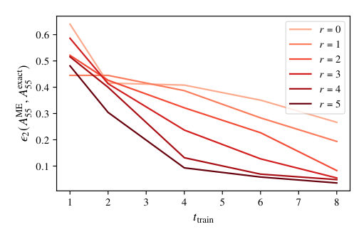
<figcaption class="paper-figure-caption"><b>Fig 5.</b> FIG. 5. Relative 𝐿2 error, 𝜀2(𝑥, 𝑦) = ∥𝑥−𝑦∥2/∥𝑦∥2, between the exact LDoS at the center of the chain, 𝐴exact 55 (𝜔), and the one obtained from extending the retarded correlation function 𝐶𝑅 55(𝑡) from 𝑡train using meAR (𝑟= 0) and meVAR including neighbors with distance 𝑟 from the central site, 𝐴ME 55 (𝜔). Including more neighbors in the VAR model allows one to achieve significantly lower reconstruction errors and from shorter training times.</figcaption>
</figure>
</div>

<p><strong>Summary.</strong> This paper introduces a maximum-entropy framework to reconstruct the spectral density of quantum correlation functions from limited real-time measurements. By modeling the correlation function as a stationary stochastic process, it applies Burg's principle to find the least-committal, positive semi-definite extension. This method offers a significant improvement over traditional techniques, enabling accurate spectral analysis even when data is noisy or the spectrum is continuous.</p>
<p><strong>Why it may be interesting.</strong> This work provides a robust, mathematically principled tool for extracting spectral information from noisy, short-time quantum dynamics data, which is crucial for analyzing transport and excitation spectra in condensed matter systems.</p>
<details>
<summary>Detailed structure</summary>
<p><strong>Main problem.</strong> The core problem is reconstructing the spectral density of quantum correlation functions from limited, short-time real-time dynamics data.</p>
<p><strong>Main result.</strong> The authors propose a maximum-entropy extension method that guarantees a positive semi-definite spectrum and satisfies fundamental sum rules, significantly improving upon standard linear prediction techniques.</p>
<p><strong>Method.</strong> The method treats the correlation function as a covariance sequence of a stationary stochastic process and applies Burg's maximum-entropy principle, modeling the extension via an all-pole autoregressive (AR) or Vector AR (VAR) model.</p>
<p><strong>Model / system.</strong> The theory applies to general quantum many-body systems, using time-dependent correlation functions, such as those related to Green's functions or dynamical structure factors.</p>
<p><strong>Key observables.</strong> Time-dependent correlation functions g(t), the spectral density S(omega), and the associated Gram matrix R(n).</p>
<p><strong>Important parameters / regimes.</strong> The length of the measured time series (n), the order of the AR model (p), and the noise level.</p>
<p><strong>Assumptions / limitations.</strong> The underlying process is assumed to be a Wide-Sense Stationary (WSS) stochastic process, and the method relies on the Gram matrix being positive semi-definite.</p>
<p><strong>Figures summary.</strong> Not specified.</p>
<p><strong>Paper structure.</strong> The paper progresses from defining the spectral reconstruction problem and limitations of existing methods (LP, Prony) to introducing the maximum-entropy approach for both scalar and matrix correlation functions, culminating in detailed mathematical derivations for the VAR model and denoising techniques.</p>
</details>
<details>
<summary>Abstract</summary>
<p>Correlation functions are central to understanding the behavior of quantum systems, with their spectra giving direct access to quasiparticle and collective excitations. However, the long-time evolution required for sufficient spectral resolution is challenging to reach for both classical and quantum simulations. In this work, we introduce a principled approach for extending time series of quantum correlation functions and reconstructing their spectral densities, based on their connection with covariance sequences of stationary stochastic processes. This connection enables us to apply Burg's maximum-entropy principle to find the least-committal extension compatible with the measured values of the correlation function, which corresponds to an all-pole autoregressive model whose coefficients solve a set of Yule--Walker equations. The resulting extension is positive semi-definite by construction, guaranteeing the positivity of the spectrum and the automatic satisfaction of its total spectral weight sum rule. The approach applies to both scalar and matrix-valued correlation functions, including those with highly structured or continuous spectra. The generalization to the matrix case makes it possible to trade simulation time for additional measured correlation functions, enabling accurate time-series extension and spectral reconstruction from short-time data, even in the presence of noise.</p>
</details>
<p><sub><a href="#top">↑ back to top</a></sub></p>

<p><a id="paper-2610.02712"></a></p>
<h3 id="correlated-memory-effect-of-environment-in-radical-pair-magnetoreception"><a href="http://arxiv.org/abs/2610.02712v1">Correlated memory effect of environment in radical-pair magnetoreception</a></h3>
<p><strong>Authors:</strong> Shixuan Chen, Yao Wang, Rui-Xue Xu, YiJing Yan<br>
<strong>Type:</strong> theory · <strong>Category:</strong> other · <strong>PDF:</strong> <a href="https://arxiv.org/pdf/2610.02712v1">https://arxiv.org/pdf/2610.02712v1</a><br>
<strong>Analysis basis:</strong> full PDF text, analyzed in chunks
<strong>Topic relevance:</strong> <code>correlated / nonlocal dissipation</code> <strong>3/5</strong> · <code>methods for driven-dissipative</code> <strong>3/5</strong> · <code>Keldysh / 2PI / non-Gaussian methods</code> <strong>1/5</strong> · <code>driven-dissipative phase transition</code> <strong>1/5</strong> · <code>quantum measurements</code> <strong>1/5</strong></p>
<div class="figure-strip-hint">↔ Scroll figures horizontally</div>
<div class="paper-figures-scroll">
<figure class="paper-figure-card">
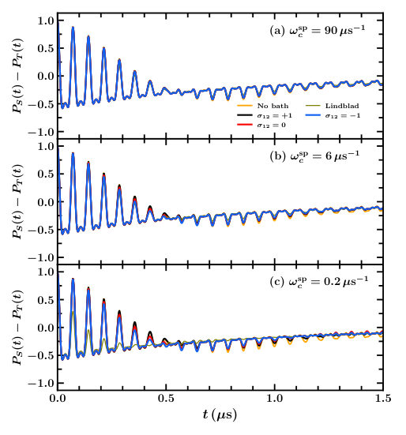
<figcaption class="paper-figure-caption"><b>Fig 1.</b> FIG. 1. Time evolution of the singlet–triplet population in term of PS(t) −PT (t) for the spin-bath cutoff frequencies ωsp c = 90, 6, and 0.2 µs−1 in three panels, respectively. In each panel the DEOM results are shown with thick lines for fully correlated (σ12 = +1), uncorrelated (σ12 = 0), and fully anticorrelated (σ12 = −1) spin-bath fluctuations. The no- bath result and the Markovian Lindblad result for σ12 = 0 are included (shown in thin lines) for comparison. The angle is fixed at θ = 68◦. The remaining parameters are given in Table I and main text.</figcaption>
</figure>
<figure class="paper-figure-card">
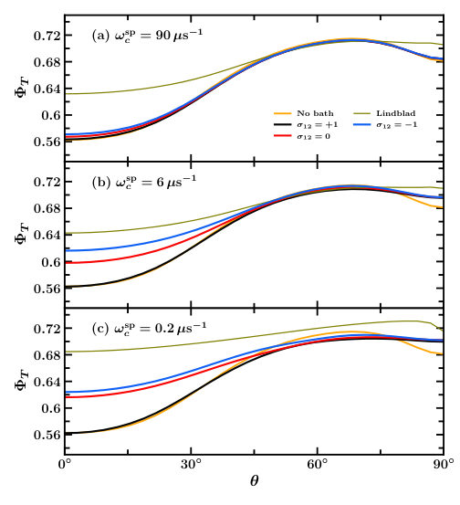
<figcaption class="paper-figure-caption"><b>Fig 2.</b> FIG. 2. Angular dependence of the triplet reaction yield ΦT in Eq. (10) for the spin-bath cutoff frequencies ωsp c = 90, 6, and 0.2 µs−1in three panels, respectively. In each panel the DEOM results are shown with thick lines for fully corre- lated (σ12 = +1), uncorrelated (σ12 = 0), and fully anticorre- lated (σ12 = −1) spin-bath fluctuations. The no-bath result and the Markovian Lindblad result for σ12 = 0 are included (shown in thin lines) for comparison. The remaining param- eters are given in Table I and main text.</figcaption>
</figure>
</div>

<p><strong>Summary.</strong> This theoretical study models radical-pair magnetoreception, treating the system as coupled to both a spin bath and a bosonic bath. By employing the non-Markovian HEOM/DEOM method, the authors demonstrate that the correlated memory effects from these environments are essential for correctly predicting the compass response. The findings highlight the limitations of simpler Markovian approximations in this context.</p>
<p><strong>Why it may be interesting.</strong> This work provides a detailed, non-perturbative treatment of open quantum systems involving multiple correlated baths, which is highly relevant for understanding decoherence and quantum dynamics in complex physical systems like biological sensors.</p>
<details>
<summary>Detailed structure</summary>
<p><strong>Main problem.</strong> The study investigates the role of the correlated memory effect from the environment in determining the efficiency of radical-pair magnetoreception.</p>
<p><strong>Main result.</strong> The non-Markovian memory effect from both the spin bath and the bosonic bath is shown to be a crucial ingredient, as Markovian approximations fail to accurately predict the angular dependence of the reaction yield.</p>
<p><strong>Method.</strong> The dynamics are propagated using the non-Markovian Hierarchical Equations of Motion (HEOM) or Dissipative Equations of Motion (DEOM) method, comparing results against the Markovian Lindblad master equation.</p>
<p><strong>Model / system.</strong> The system is a light-generated, spin-correlated radical pair undergoing singlet-triplet interconversion, influenced by both a spin bath and a bosonic bath.</p>
<p><strong>Key observables.</strong> Spin populations ($P_\alpha(t)$) and the orientation-dependent reaction yields ($\Phi_\alpha(B, 	heta)$).</p>
<p><strong>Important parameters / regimes.</strong> Bath memory effect (controlled by spin-bath cutoff frequency $\omega_{sp}^c$) and the cross-correlation between bath components ($\sigma_{12}$).</p>
<p><strong>Assumptions / limitations.</strong> The spin bath is treated as an effective Gaussian environment in the linear-response limit, allowing the use of HEOM/DEOM for simultaneous non-Markovian treatment of both baths.</p>
<p><strong>Figures summary.</strong> Figures compare HEOM/DEOM results against Lindblad results, demonstrating that the angular dependence of the reaction yield is highly sensitive to the inclusion of bath memory effects.</p>
<p><strong>Paper structure.</strong> The paper first establishes the full Hamiltonian including system, spin bath, and bosonic bath interactions. It then develops the non-Markovian HEOM/DEOM framework, compares it to the Markovian Lindblad limit, and finally presents numerical results showing the necessity of memory effects and spatial correlations for accurate magnetoreception modeling.</p>
</details>
<details>
<summary>Abstract</summary>
<p>In the photoreceptor compass model, a light-generated, spin-correlated radical pair undergoes singlet-triplet interconversion driven by Zeeman and anisotropic hyperfine interactions, leading to orientation-dependent reaction yields. In this study, we consider simultaneously the spin environment and the boson environment surrounding the radical-pair system and concentrate on the correlated memory effect of the spin bath. In the linear-response limit, the spin bath is mapped to an effective Gaussian environment. The system dynamics and yields under its influence together with the bosonic bath are propagated uniformly using the hierarchical equations of motion (HEOM) or equivalently the dissipaton equations of motion (DEOM) method. The HEOM/DEOM is non-Markovian and non-perturbative, exact for Gaussian environments. Corresponding results of the Markovian Lindblad master equation are also shown for comparison. Numerical demonstrations highlight the non-Markovian memory effect as a crucial ingredient for radical-pair magnetoreception.</p>
</details>
<p><sub><a href="#top">↑ back to top</a></sub></p>

<p><a id="paper-2610.03629"></a></p>
<h3 id="discriminating-lindbladian-dynamics"><a href="http://arxiv.org/abs/2610.03629v1">Discriminating Lindbladian Dynamics</a></h3>
<p><strong>Authors:</strong> Robert Salzmann, Ludovico Lami, Martin B. Plenio, Susana F. Huelga<br>
<strong>Type:</strong> theory · <strong>Category:</strong> quantum information and computing · <strong>PDF:</strong> <a href="https://arxiv.org/pdf/2610.03629v1">https://arxiv.org/pdf/2610.03629v1</a><br>
<strong>Analysis basis:</strong> full PDF text, analyzed in chunks
<strong>Topic relevance:</strong> <code>methods for driven-dissipative</code> <strong>3/5</strong> · <code>quantum measurements</code> <strong>3/5</strong> · <code>correlated / nonlocal dissipation</code> <strong>1/5</strong> · <code>driven-dissipative phase transition</code> <strong>1/5</strong> · <code>non-equilibrium universality</code> <strong>1/5</strong></p>
<div class="figure-strip-hint">↔ Scroll figures horizontally</div>
<div class="paper-figures-scroll">
<figure class="paper-figure-card">
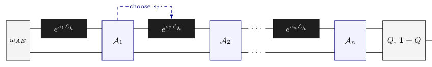
<figcaption class="paper-figure-caption"><b>Fig 1.</b> FIG. 1. An adaptive discrimination protocol for an unknown Lindblad generator Lh, with fixed h ∈{1, 2}. Starting from ωAE, evolutions on A alternate with control channels Ak on AE, followed by the binary POVM {Q, 1 −Q}. The outcome associated with Q gives a decision in favour of the null hypothesis h = 1. The number of calls n and their durations sk may depend on preceding outcomes, with P</figcaption>
</figure>
<figure class="paper-figure-card">
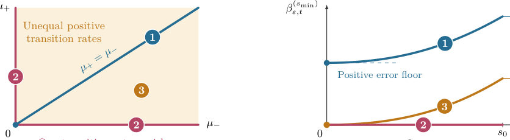
<figcaption class="paper-figure-caption"><b>Fig 2.</b> FIG. 2. Illustration of the three regimes in Table I, taking as null hypothesis the identity semigroup, i.e. L1 = 0, and as alternative hypothesis a member of the generalised amplitude damping family defined in Section VII.1, i.e. L2 = Lµ−,µ+. (a) The transition rates µ−and µ+ parametrise the plane. Equal transition rates, including the origin, give Regime 1 (blue), exactly one vanishing transition rate gives Regime 2 (red), and unequal positive transition rates give Regime 3 (orange). (b) Schematic optimal type-II error probabilities for one fixed generator from each regime, at fixed tolerance 0 &lt; ε &lt; 1 and a common sufficiently large total time t. The displayed range 0 &lt; smin ≤s0 is...</figcaption>
</figure>
</div>

<p><strong>Summary.</strong> This paper establishes the fundamental limits for distinguishing between two quantum dynamical processes described by Lindbladians. It introduces the Lindbladian Stein exponent, which quantifies the rate of distinguishability based on relative entropy. The results reveal that the required measurement protocol depends critically on the available resources, such as total time and the minimum temporal resolution.</p>
<p><strong>Why it may be interesting.</strong> This work provides rigorous, quantitative tools (the Stein exponent) to measure how well one can distinguish between different physical processes (dissipative dynamics) using quantum measurements, which is fundamental for quantum process tomography and characterization.</p>
<details>
<summary>Detailed structure</summary>
<p><strong>Main problem.</strong> The paper investigates the fundamental limits of distinguishing between two quantum Markovian dynamics, generated by Lindbladians, by analyzing the optimal type-II error probability.</p>
<p><strong>Main result.</strong> The distinguishability is characterized by the Lindbladian Stein exponent, which relates the error decay rate to the largest instantaneous increase of the quantum relative entropy.</p>
<p><strong>Method.</strong> The analysis uses adaptive quantum hypothesis testing protocols involving sequential evolution steps and intermediate quantum controls, drawing connections to quantum Stein lemmas.</p>
<p><strong>Model / system.</strong> The system involves an auxiliary quantum system evolving under two competing Lindbladian generators, $L_1$ and $L_2$, modeling memoryless quantum dynamics.</p>
<p><strong>Key observables.</strong> Type-I and Type-II error probabilities ($\alpha, eta$), the Lindbladian Stein exponent ($\gamma$), and the optimal error probability $eta_{\epsilon, t}$.</p>
<p><strong>Important parameters / regimes.</strong> Total exposure time ($t$), minimum resolution time ($s_{\min}$), and the type-I tolerance ($\epsilon$).</p>
<p><strong>Assumptions / limitations.</strong> The dynamics are assumed to be quantum Markovian and time-homogeneous; the analysis considers adaptive protocols with arbitrary instantaneous controls.</p>
<p><strong>Figures summary.</strong> Figures illustrate the adaptive discrimination protocol, showing the sequence of evolution steps and control channels, and comparing error regimes based on transition rates.</p>
<p><strong>Paper structure.</strong> The paper develops the characterization of the Stein exponent, establishes algebraic criteria for its finiteness, and analyzes three distinct regimes (finite exponent, zero error at positive resolution time, and vanishing error requiring $s_{\min} 	o 0$).</p>
</details>
<details>
<summary>Abstract</summary>
<p>The fundamental task of quantum hypothesis testing, which consists in discriminating quantum objects, has been extensively studied for quantum states and channels. Here, we investigate the fundamental limits of discriminating an arbitrary pair of quantum Markovian dynamics generated by Lindbladians, focusing on the roles of total exposure time and temporal resolution. We allow adaptive choices of evolution durations and arbitrary instantaneous controls between them. We characterise the optimal type-II error exponent (Stein exponent) as the largest instantaneous increase of quantum relative entropy, and give an algebraic criterion for its finiteness in terms of the Lindbladians. Remarkably, an infinite exponent is equivalent to a vanishing type-II error probability at sufficiently large finite total time, for every positive type-I tolerance. While some dynamics admit a finite protocol with zero type-II error, others require increasingly fine temporal control. For the latter, the error vanishes as the minimum allowed evolution duration, or resolution time, tends to zero at fixed sufficiently large total time, but remains bounded away from zero at every fixed positive resolution time. We achieve this using quantum Zeno protocols, establishing temporal resolution as a resource for discrimination. When the null hypothesis is the identity semigroup, an infinite asymptotic error exponent has a stronger consequence: at a fixed finite total exposure time, the type-II error can be made arbitrarily small while keeping the type-I error exactly zero. This is impossible in the corresponding classical setting. Discriminating the identity semigroup from generalised amplitude damping on a qubit provides examples of all three regimes: a finite asymptotic error exponent, zero type-II error attainable at positive resolution time, and vanishing type-II error requiring the resolution time to tend to zero.</p>
</details>
<p><sub><a href="#top">↑ back to top</a></sub></p>

<p><a id="paper-2610.03676"></a></p>
<h3 id="how-i-learned-to-stop-worrying-and-love-the-redfield-equation-completely-positive-resummation-of-non-markovian-dynamics"><a href="http://arxiv.org/abs/2610.03676v1">How I Learned to Stop Worrying and Love the Redfield Equation: Completely-Positive Resummation of Non-Markovian Dynamics</a></h3>
<p><strong>Authors:</strong> Greg Kaplanek, Jason Pollack<br>
<strong>Type:</strong> theory · <strong>Category:</strong> other · <strong>PDF:</strong> <a href="https://arxiv.org/pdf/2610.03676v1">https://arxiv.org/pdf/2610.03676v1</a><br>
<strong>Analysis basis:</strong> full PDF text, analyzed in chunks
<strong>Topic relevance:</strong> <code>methods for driven-dissipative</code> <strong>3/5</strong> · <code>Keldysh / 2PI / non-Gaussian methods</code> <strong>1/5</strong> · <code>analog quantum simulation</code> <strong>1/5</strong> · <code>correlated / nonlocal dissipation</code> <strong>1/5</strong> · <code>driven-dissipative phase transition</code> <strong>1/5</strong> · <code>non-equilibrium universality</code> <strong>1/5</strong> · <code>quantum measurements</code> <strong>1/5</strong></p>
<div class="figure-strip-hint">↔ Scroll figures horizontally</div>
<div class="paper-figures-scroll">
<figure class="paper-figure-card">
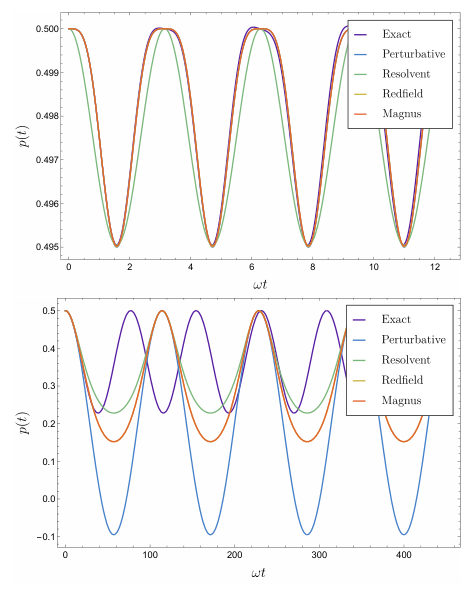
<figcaption class="paper-figure-caption"><b>Fig 1.</b> FIG. 1. Evolution of the excited-state population for an initially maximally-mixed system qubit (140). We compare the exact evolution with second-order perturbation theory and the resolvent, Redfield, and Magnus resummations. The top panel shows a detuned example with Ω/ω = 3 and λ/ω = 0.1. The bottom panel shows a near resonance case Ω≃ω with Ω/ω = 1.055 and λ/ω = 0.03, in which even perturbation theory does a poor job at approximating the exact dynamics. The Redfield and Magnus resummations are nearly indistinguishable at this scale; they are compared more directly in Figure 2. Notice that the resolvent resum- mation remains CP but does a poor job at approximating the exact dynamics.</figcaption>
</figure>
<figure class="paper-figure-card">
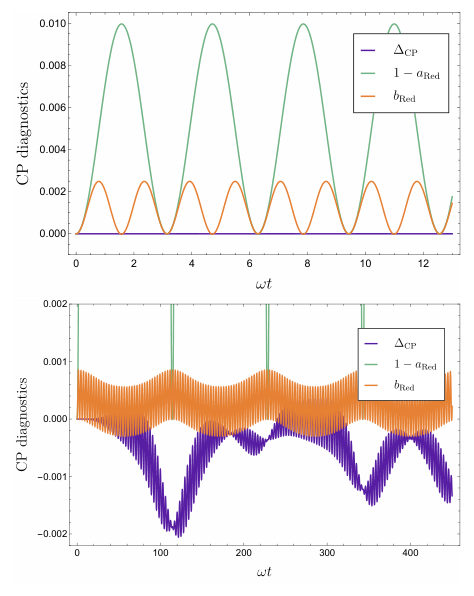
<figcaption class="paper-figure-caption"><b>Fig 2.</b> FIG. 2. Complete-positivity diagnostics for the Redfield map, evaluated for the same parameter choices as in Fig. 1. The top panel shows the detuned case, Ω/ω = 3 and λ/ω = 0.1, while the bottom panel shows the near-resonant case, Ω/ω = 1.055 and λ/ω = 0.03. The Redfield map re- mains CPTP only while all three quantities are non-negative. Small violations develop in the near-resonant example, even though the Redfield and Magnus population dynamics are nearly indistinguishable.</figcaption>
</figure>
<figure class="paper-figure-card">
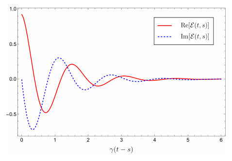
<figcaption class="paper-figure-caption"><b>Fig 3.</b> FIG. 3. Plot of the correlator E(t, s) from Eq. (172) for the choice Ω/γ = 4. Notice that the fall-off of the imaginary part is much slower than the real part, consistent with Eq. (174).</figcaption>
</figure>
<figure class="paper-figure-card">
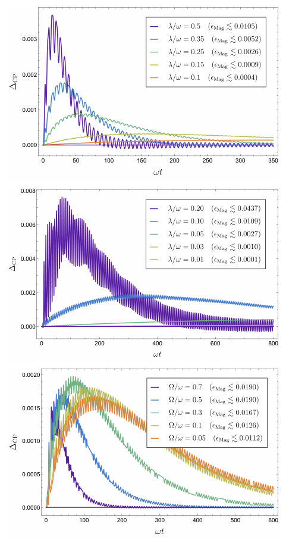
<figcaption class="paper-figure-caption"><b>Fig 4.</b> FIG. 4. Complete-positivity diagnostic ∆CP as a function of ωt for the Redfield map in three parameter regimes. The top panel varies λ/ω, with Ω/ω = 0 and γ/ω = 10 fixed. The middle panel varies λ/ω, with Ω= 0 and γ/ω = 0.1 fixed. The bottom panel varies Ω/ω, with λ/ω = 0.1 and γ/ω = 0.25 fixed. In each case, increasing the late-time value ϵMag is accompanied by increasing violations of complete positivity at late times.</figcaption>
</figure>
</div>

<p><strong>Summary.</strong> This paper rigorously compares different mathematical methods—Redfield, Magnus, and resolvent—used to approximate the dynamics of open quantum systems. It establishes a weak-coupling criterion to determine when the standard Redfield approximation remains physically valid by ensuring the resulting evolution map is completely positive. This clarifies the reliability of these approximations, especially in non-Markovian regimes.</p>
<p><strong>Why it may be interesting.</strong> This is highly relevant for AMO and open quantum systems, as it provides rigorous mathematical tools to assess the physical validity (positivity) of common, yet approximate, master equation derivations.</p>
<details>
<summary>Detailed structure</summary>
<p><strong>Main problem.</strong> The paper compares various mathematical resummations (Redfield, Magnus, resolvent) of the same second-order perturbative map describing open quantum system dynamics.</p>
<p><strong>Main result.</strong> It derives a weak-coupling criterion that determines when the Redfield evolution remains close to a physically consistent, Completely Positive Trace-Preserving (CPTP) map, even when non-Markovian.</p>
<p><strong>Method.</strong> The analysis involves comparing the formal structures of different perturbative expansions (Redfield vs. Magnus) and deriving necessary conditions for the resulting map to preserve complete positivity.</p>
<p><strong>Model / system.</strong> The study focuses on open quantum systems, using finite-dimensional (qubit) systems coupled to an environment (bath) to analyze the reduced dynamics.</p>
<p><strong>Key observables.</strong> Complete Positivity (CPTP) of the reduced quantum channel, and the comparison between the Redfield and Magnus evolution operators.</p>
<p><strong>Important parameters / regimes.</strong> The system-environment coupling strength ($\lambda$) and the order of the perturbative expansion ($O(\lambda^2)$).</p>
<p><strong>Assumptions / limitations.</strong> The analysis assumes the positivity property of the environmental correlator and that the dynamics can be approximated by a second-order perturbative map.</p>
<p><strong>Figures summary.</strong> Not specified by the notes, but the comparison of different resummations (Redfield vs. Magnus) is central.</p>
<p><strong>Paper structure.</strong> The paper systematically compares the Redfield, Magnus, and resolvent resummations, derives the weak-coupling criterion, and illustrates its application in finite-dimensional qubit systems.</p>
</details>
<details>
<summary>Abstract</summary>
<p>The Redfield equation with time-dependent coefficients (or TCL2 equation) gives one of the simplest perturbative descriptions of open quantum system dynamics derived from a microscopic theory. Its status as an approximation is nevertheless subtle: while perturbation theory fixes the reduced dynamics order-by-order in the system-environment coupling, solving the Redfield equation yields a particular resummation that need not preserve complete positivity. Here we compare Redfield evolution with an exponentiated (Magnus) resummation of the same second-order perturbative map, which is completely positive and trace preserving (CPTP) for a broad class of physical conditions. We also construct a simple CPTP resolvent resummation, illustrating the non-uniqueness of resummations of the same perturbative map. The Redfield and Magnus prescriptions agree to second order but differ through time-ordering corrections at higher orders. We exhibit a weak-coupling criterion which guarantees that Redfield evolution, even when non-Markovian, remains close to a CPTP map. We illustrate the criterion in two examples, focusing on finite-dimensional (qubit) systems. Our results clarify when, and why, Redfield evolution can remain reliable even when it is highly non-Lindbladian.</p>
</details>
<p><sub><a href="#top">↑ back to top</a></sub></p>

<p><a id="paper-2610.03040"></a></p>
<h3 id="direct-estimation-of-math172math-from-click-statistics-of-a-multiplexed-detector"><a href="http://arxiv.org/abs/2610.03040v1">Direct estimation of $g^{(2)}(0)$ from click statistics of a multiplexed detector</a></h3>
<p><strong>Authors:</strong> Jaromír Fiurášek<br>
<strong>Type:</strong> theory · <strong>Category:</strong> other · <strong>PDF:</strong> <a href="https://arxiv.org/pdf/2610.03040v1">https://arxiv.org/pdf/2610.03040v1</a><br>
<strong>Analysis basis:</strong> full PDF text, analyzed in chunks
<strong>Topic relevance:</strong> <code>Full counting statistics</code> <strong>3/5</strong> · <code>quantum measurements</code> <strong>3/5</strong> · <code>quantum optics experiment</code> <strong>2/5</strong></p>
<div class="figure-strip-hint">↔ Scroll figures horizontally</div>
<div class="paper-figures-scroll">
<figure class="paper-figure-card">
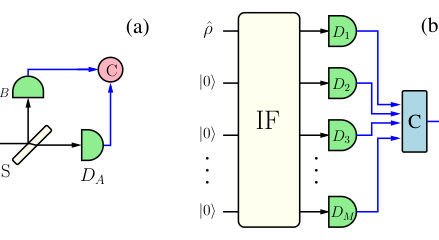
<figcaption class="paper-figure-caption"><b>Fig 1.</b> FIG. 1. (a) The Hanbury Brown and Twiss detection scheme. The input signal is split at a balanced beam splitter BS and measured with two click detectors DA and DB. Coincidences of detector clicks are counted, together with single clicks. (b) Multiplexed M-channel detector. The input signal is divided into M spatial or temporal channels using an M-port interfer- ometer. Each output mode is measured with a click detector that distinguishes the presence and absence of photons, and the number of clicks is counted.</figcaption>
</figure>
<figure class="paper-figure-card">
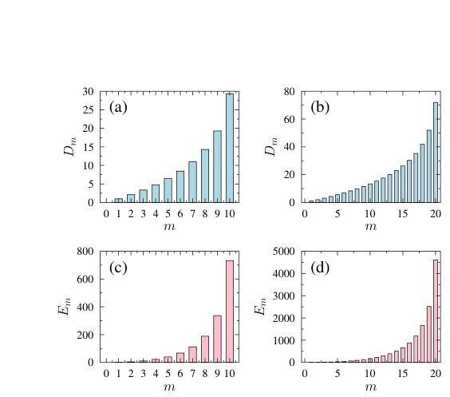
<figcaption class="paper-figure-caption"><b>Fig 2.</b> FIG. 2. The coefficients Dm (a,b) and Em (c,d) that specify the estimators µ1 and µ2 are plotted for two multiplexed de- tectors with different numbers of detection channels M = 10 (a,c) and M = 20 (b,d) [36]. The estimators are constructed for perfectly balanced detectors with η = 1 and RD = 0.</figcaption>
</figure>
<figure class="paper-figure-card">
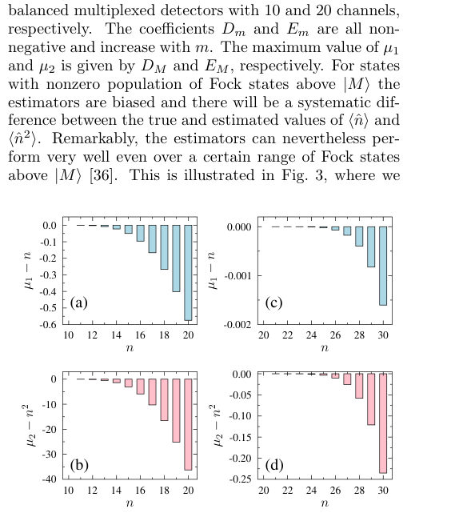
<figcaption class="paper-figure-caption"><b>Fig 3.</b> FIG. 3. Differences between the estimated and the true val- ues of the first and second moments of the photon number operator are plotted for input Fock states |n⟩and two differ- ent numbers of detection channels M = 10 (a,b) and M = 20 (c,d). The other parameters read η = 1 and RD = 0. Note the different scales on the horizontal axes for M = 10 and M = 20.</figcaption>
</figure>
<figure class="paper-figure-card">
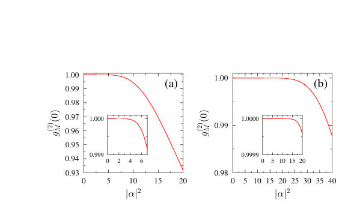
<figcaption class="paper-figure-caption"><b>Fig 4.</b> FIG. 4. Estimated second-order correlation function g(2) M (0) for input coherent state |α⟩is plotted as a function of the mean photon number |α|2 for two different numbers of detec- tion channels M = 10 (a) and M = 20 (b). The insets show the behavior of g(2) M (0) in the region |α|2 &lt; M.</figcaption>
</figure>
<figure class="paper-figure-card">
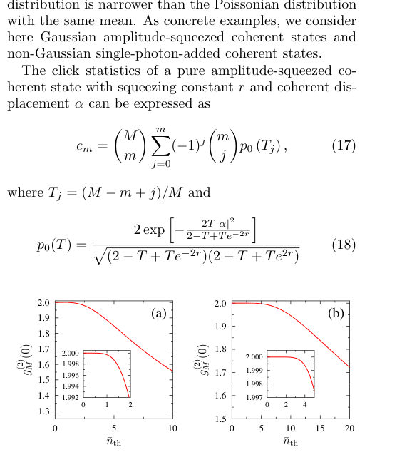
<figcaption class="paper-figure-caption"><b>Fig 5.</b> FIG. 5. Estimated second-order correlation function g(2) M (0) for input single-mode thermal state is plotted as a function of the mean photon number ¯nth for two different numbers of detection channels M = 10 (a) and M = 20 (b).</figcaption>
</figure>
</div>

<p><strong>Summary.</strong> This paper presents a novel, direct method to estimate the second-order correlation function, g^(2)(0), using only the click statistics from a multiplexed quantum detector. By employing linear estimators for the first and second moments of the photon number operator, the technique achieves high accuracy even for strong light fields and incorporates necessary corrections for detector losses. This establishes a powerful, versatile diagnostic tool for quantum light characterization.</p>
<p><strong>Why it may be interesting.</strong> This work is highly relevant to quantum optics and open quantum systems, providing a practical, measurable diagnostic tool for characterizing quantum light states beyond simple intensity measurements.</p>
<details>
<summary>Detailed structure</summary>
<p><strong>Main problem.</strong> The paper addresses the direct and accurate estimation of the second-order correlation function, g^(2)(0), from the click statistics recorded by a multiplexed quantum detector.</p>
<p><strong>Main result.</strong> A simple, versatile, and theoretically rigorous method is established that allows for the quantitative characterization of quantum light, providing accurate results even for high mean photon numbers and compensating for detector losses.</p>
<p><strong>Method.</strong> The method uses linear estimators derived from the first and second moments of the photon-number operator, constructed using the measured click probabilities from the multiplexed detector channels.</p>
<p><strong>Model / system.</strong> The physical system is a multiplexed detector composed of M binary on-off detection channels. The analysis covers various input quantum states, including coherent, thermal, and amplitude-squeezed states.</p>
<p><strong>Key observables.</strong> The primary observable is the second-order correlation function, g^(2)(0). Other key observables include the estimated first ($\mu_1$) and second ($\mu_2$) moments of the photon number operator.</p>
<p><strong>Important parameters / regimes.</strong> Key parameters include the number of channels (M), the detection efficiency ($\eta$), and the mean photon number ($\langle n 
angle$ or $ar{n}$).</p>
<p><strong>Assumptions / limitations.</strong> The analysis assumes the detector response can be modeled by click probabilities, and for unbalanced detectors, it assumes the effective transmittances can be calibrated.</p>
<p><strong>Figures summary.</strong> Figures demonstrate the accuracy of the estimation for various states (coherent, thermal) across different channel numbers (M=10, M=20). Specific plots illustrate the dependence of g^(2)(0) on mean photon number and show the convexity of the $\mu_2$ vs $\mu_1$ curve for coherent states.</p>
<p><strong>Paper structure.</strong> The paper first introduces the problem and the limitations of existing methods. It then develops the linear estimators for the first and second moments, deriving coefficients using detector response matrices. Key sections detail loss compensation, derive nonclassicality criteria based on the estimated moments, and extend the analysis to unbalanced detectors.</p>
</details>
<details>
<summary>Abstract</summary>
<p>We present and theoretically analyze a method for direct estimation of the second-order correlation function $g^{(2)}(0)$ from the click statistics of a multiplexed detector composed of M binary on-off detection channels. The method uses linear estimators of the first and second moments of the photon-number operator and can provide accurate results even for optical fields with substantial mean photon numbers. For a fixed number of channels, the detection range can be extended by introducing additional losses before the detector. We demonstrate the performance of the method for coherent, thermal, amplitude-squeezed, and photon-added coherent states. We also derive a nonclassicality criterion based on the estimated correlation function and show how the method can be adapted to unbalanced detectors. Our work establishes direct estimation of $g^{(2)}(0)$ as a simple and versatile method for quantitatively characterizing quantum light using multiplexed click detectors.</p>
</details>
<p><sub><a href="#top">↑ back to top</a></sub></p>

<p><a id="paper-2610.03281"></a></p>
<h3 id="efficiently-and-reliably-measuring-information-processing-capacity-in-dynamical-systems-via-kernels"><a href="http://arxiv.org/abs/2610.03281v1">Efficiently and Reliably Measuring Information Processing Capacity in Dynamical Systems via Kernels</a></h3>
<p><strong>Authors:</strong> Alessio Benavoli, Felix Binder, Cangxiong Chen<br>
<strong>Type:</strong> both · <strong>Category:</strong> disordered systems and neural networks · <strong>PDF:</strong> <a href="https://arxiv.org/pdf/2610.03281v1">https://arxiv.org/pdf/2610.03281v1</a><br>
<strong>Analysis basis:</strong> full PDF text, analyzed in chunks
<strong>Topic relevance:</strong> <code>analog quantum simulation</code> <strong>3/5</strong> · <code>correlated / nonlocal dissipation</code> <strong>1/5</strong> · <code>driven-dissipative phase transition</code> <strong>1/5</strong> · <code>methods for driven-dissipative</code> <strong>1/5</strong> · <code>non-equilibrium universality</code> <strong>1/5</strong></p>
<div class="figure-strip-hint">↔ Scroll figures horizontally</div>
<div class="paper-figures-scroll">
<figure class="paper-figure-card">
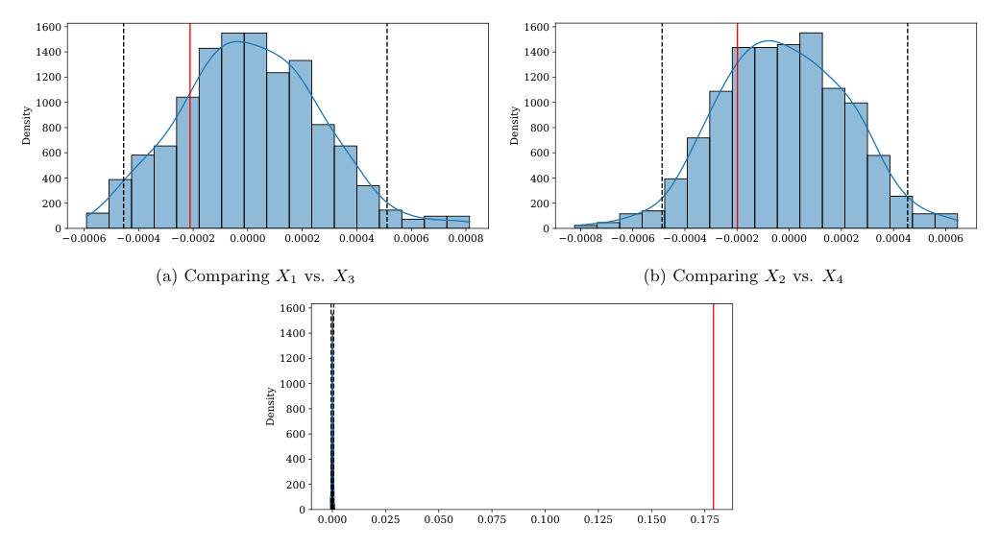
<figcaption class="paper-figure-caption"><b>Fig 1.</b> FIG. 1: Hypothesis Testing: the null-distribution is in blue; the difference between the KIPC for the two reservoirs being compared (∆) is indicated by the red-continuous vertical line; the α/2 and 1 −α/2 percentiles are indicated by the dashed black vertical lines. Notice that we cannot reject the null-hypothesis (with significance α) for the comparisons X1, X3 and X2, X4. However, we can reject the null for comparisons X1, X2 and X3, X4.</figcaption>
</figure>
<figure class="paper-figure-card">
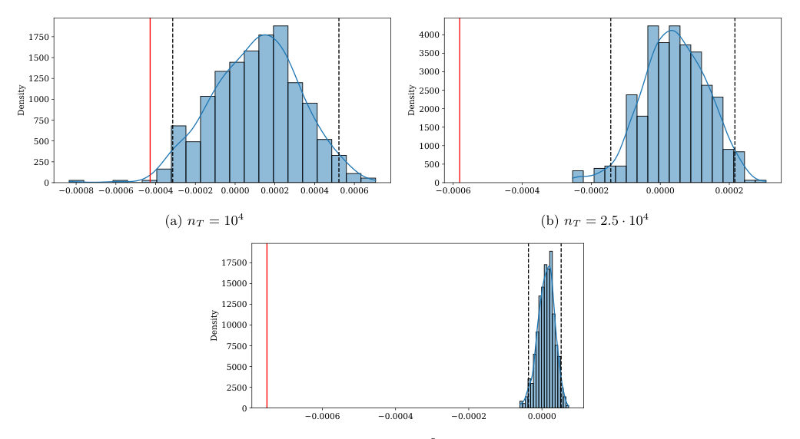
<figcaption class="paper-figure-caption"><b>Fig 2.</b> FIG. 2: Hypothesis Testing for X1 vs. X5: the null-distribution is in blue; the difference between the KIPC for the two reservoirs being compared (∆) is indicated by the red-continuous vertical line; the α/2 and 1 −α/2 percentiles are indicated by the dashed black vertical lines. Notice that we can reject the null-hypothesis in each of the comparisons between X1 and X5.</figcaption>
</figure>
<figure class="paper-figure-card">
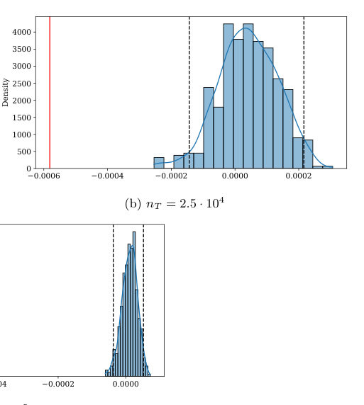
<figcaption class="paper-figure-caption"><b>Fig 3.</b> Figure 4 summarises the results. The left column of Figure 4 shows the results for p = 1. For the total- IPC, shown in Figures 4a and 4c, we report the usual breakdown of IPC contributions by nonlinearity order – we computed it using the Python ipc-module [40]. Each color represents the IPC term Cd(S, Ld, u) relative to the degree d = 1, . . . , 10. They are plotted one above the other, so that their upper envelope corresponds to the total-IPC.</figcaption>
</figure>
<figure class="paper-figure-card">
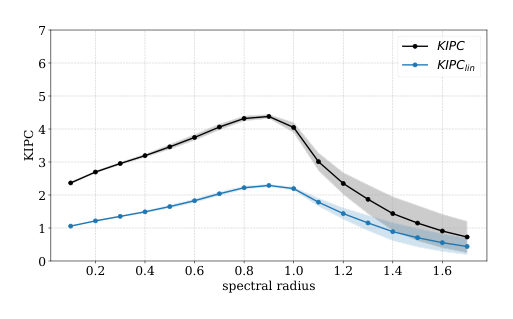
<figcaption class="paper-figure-caption"><b>Fig 4.</b> FIG. 3: p = 9: KIPC with τmax = 15. Notice that the capacity computed by KIPC starts to decrease at s = 0.9. Since KIPClin only marginally exhibits this decrease, the reduction of τmax primarily affects the nonlinear terms.</figcaption>
</figure>
<figure class="paper-figure-card">
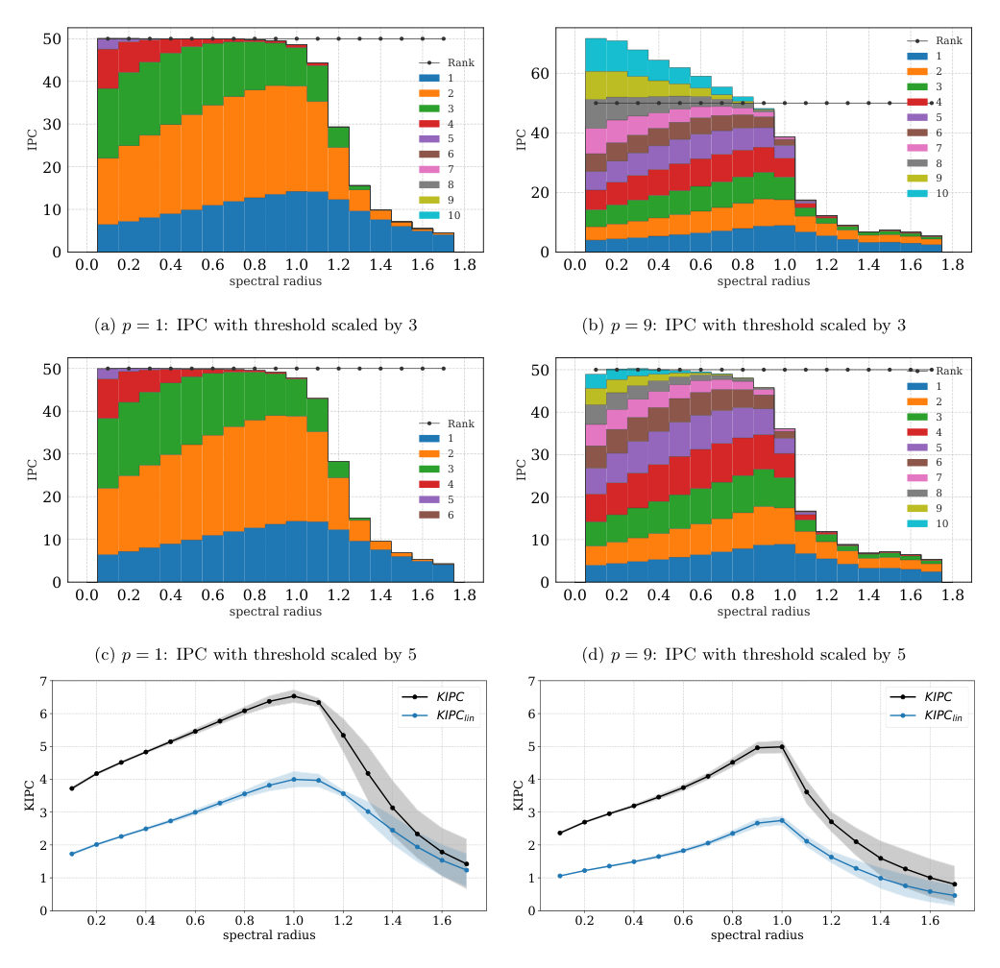
<figcaption class="paper-figure-caption"><b>Fig 5.</b> FIG. 4: Computation of total-IPC and KIPC for the ESN numerical experiment. The left-column plots are relative to the case p = 1, while the right-column plots to p = 9. Section IV A contains a detailed analysis of the plots. In the KIPC-plots, shaded regions represent 95% confidence intervals computed over the Monte Carlo runs.</figcaption>
</figure>
</div>

<p><strong>Summary.</strong> This paper presents Kernel-IPC (KIPC), a novel, computationally efficient method to measure the Information Processing Capacity of dynamical systems. By employing kernel methods, KIPC bypasses the combinatorial explosion associated with traditional IPC calculations, allowing for the assessment of the full, infinite-dimensional basis. The method is demonstrated on both artificial neural networks and a disordered quantum spin chain, proving its utility in characterizing complex quantum dynamics.</p>
<p><strong>Why it may be interesting.</strong> The application to a disordered quantum spin chain reservoir directly connects the abstract concept of information processing capacity to a concrete, physically relevant model in condensed matter physics, providing a powerful diagnostic tool for understanding reservoir dynamics.</p>
<details>
<summary>Detailed structure</summary>
<p><strong>Main problem.</strong> The paper addresses the computational bottleneck in quantifying the Information Processing Capacity (IPC) of dynamical systems, a metric used to assess computational capability.</p>
<p><strong>Main result.</strong> It introduces Kernel-IPC (KIPC), a scalable framework that uses kernel methods to compute the total IPC without needing to explicitly enumerate the infinite basis functions, thereby avoiding combinatorial complexity.</p>
<p><strong>Method.</strong> KIPC is computed by leveraging kernel methods and the trace of the kernel matrix evaluated on the delayed embedding, providing an unbiased estimator for the total capacity.</p>
<p><strong>Model / system.</strong> The method is validated on an Echo State Network (ESN) and applied to a disordered quantum spin chain reservoir, which is governed by a specific Hamiltonian involving coupling constants and disorder terms.</p>
<p><strong>Key observables.</strong> Information Processing Capacity (IPC) and the kernel-based variant (KIPC); the difference between KIPC and its linear component ($KIPC_{	ext{nonlin}}$).</p>
<p><strong>Important parameters / regimes.</strong> The maximum polynomial degree and delay (which KIPC circumvents); disorder strength ($W$) and bias field ($h$) in the spin chain model.</p>
<p><strong>Assumptions / limitations.</strong> The input signal $u$ is assumed to be zero-mean and i.i.d.; the derivation for the unbiased estimator involves neglecting the diagonal term for finite time steps.</p>
<p><strong>Figures summary.</strong> Figures show KIPC results for ESN experiments under varying parameters (e.g., $p=1$ vs $p=9$) and for the QRC experiment across sweeps of disorder ($W$) and bias ($h$), demonstrating phase transitions.</p>
<p><strong>Paper structure.</strong> The paper first establishes the theoretical limitations of standard IPC, then introduces the kernel-based KIPC framework with mathematical derivations (including kernel definitions for various polynomials), and finally validates this method through numerical experiments on both ESNs and disordered quantum spin chains.</p>
</details>
<details>
<summary>Abstract</summary>
<p>Information Processing Capacity (IPC) is a powerful system-agnostic metric for quantifying a dynamical system's computational capability and is widely used in quantum reservoir computing. However, standard IPC suffers from severe computational limitations. Computing IPC involves estimating how well the system can reconstruct, via linear regression, an (in principle) infinite family of orthogonal polynomial functions of delayed inputs. In practice, this evaluation must be made finite, so we need only to consider polynomials up to a chosen maximum degree. Moreover, the computational complexity for computing IPC grows combinatorially with the considered maximum degree and delay. Here, we introduce Kernel-IPC (KIPC), a scalable framework that uses kernel methods to compute the total IPC without explicitly enumerating basis functions. This allows us to account for the full (infinite) basis (without degree truncation). We also provide a null-hypothesis test for statistically comparing the KIPC of two dynamical systems. We validate KIPC on an echo state network and demonstrate its utility for quantum reservoir computing on a disordered spin chain.</p>
</details>
<p><sub><a href="#top">↑ back to top</a></sub></p>

<p><a id="paper-2610.02362"></a></p>
<h3 id="from-static-lindblad-stabilizability-to-robust-physical-control-sequences"><a href="http://arxiv.org/abs/2610.02362v1">From Static Lindblad Stabilizability to Robust Physical Control Sequences</a></h3>
<p><strong>Authors:</strong> Yibin Wang, Ruifeng Liu<br>
<strong>Type:</strong> theory · <strong>Category:</strong> quantum information and computing · <strong>PDF:</strong> <a href="https://arxiv.org/pdf/2610.02362v1">https://arxiv.org/pdf/2610.02362v1</a><br>
<strong>Analysis basis:</strong> full PDF text, analyzed in chunks
<strong>Topic relevance:</strong> <code>methods for driven-dissipative</code> <strong>3/5</strong> · <code>quantum measurements</code> <strong>2/5</strong> · <code>correlated / nonlocal dissipation</code> <strong>1/5</strong> · <code>driven-dissipative phase transition</code> <strong>1/5</strong></p>
<div class="figure-strip-hint">↔ Scroll figures horizontally</div>
<div class="paper-figures-scroll">
<figure class="paper-figure-card">
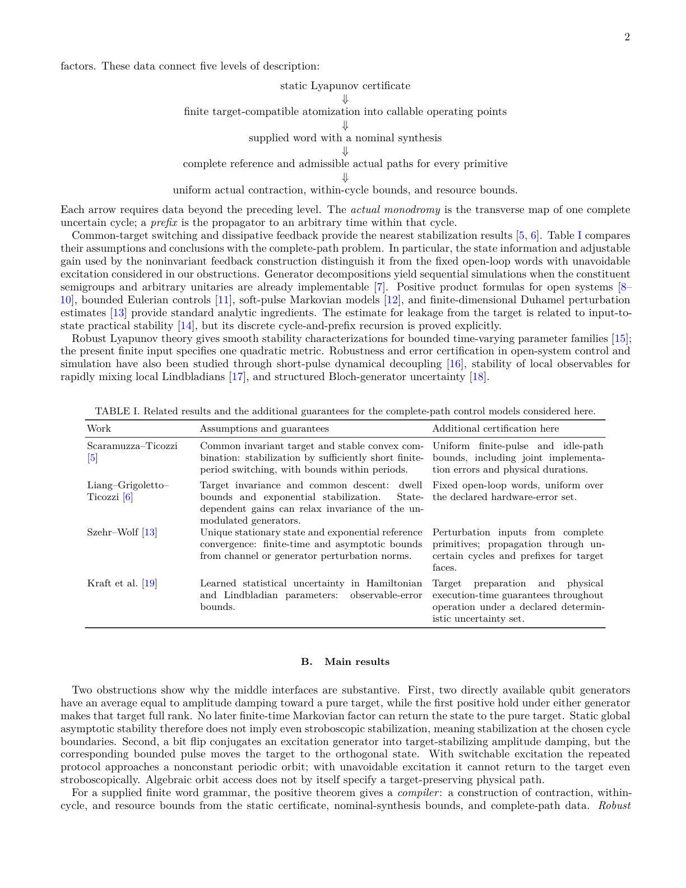
<figcaption class="paper-figure-caption"><b>Fig 1.</b> Low-resolution page preview, page 2</figcaption>
</figure>
<figure class="paper-figure-card">
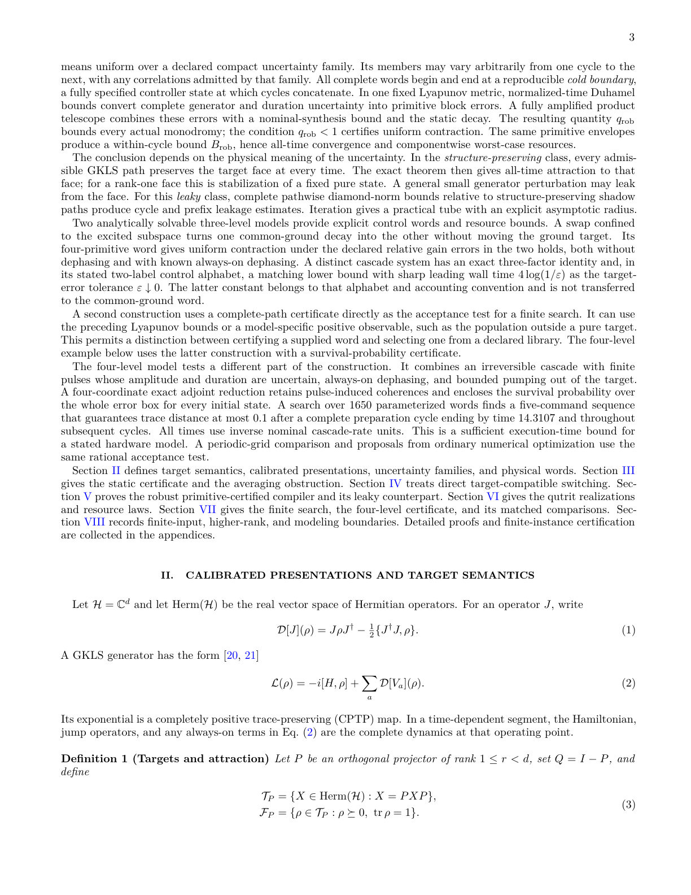
<figcaption class="paper-figure-caption"><b>Fig 2.</b> Low-resolution page preview, page 3</figcaption>
</figure>
<figure class="paper-figure-card">
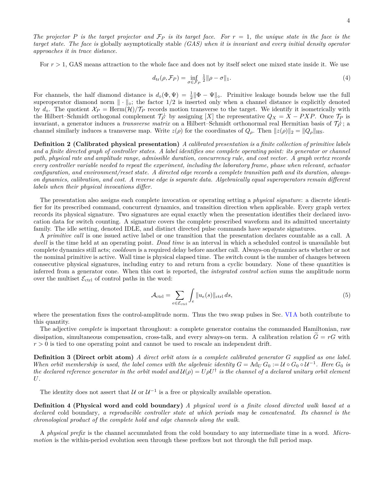
<figcaption class="paper-figure-caption"><b>Fig 3.</b> Low-resolution page preview, page 4</figcaption>
</figure>
<figure class="paper-figure-card">
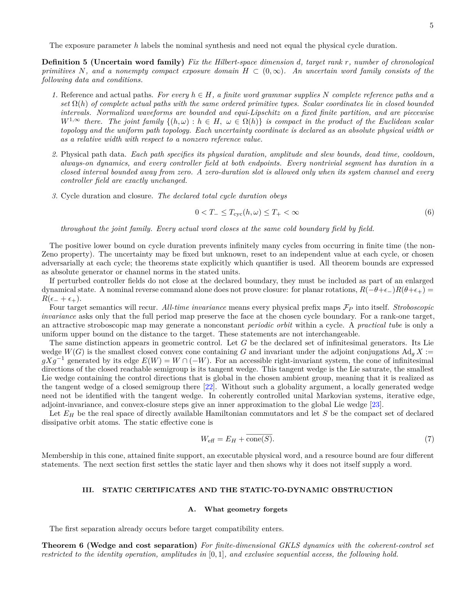
<figcaption class="paper-figure-caption"><b>Fig 4.</b> Low-resolution page preview, page 5</figcaption>
</figure>
<figure class="paper-figure-card">
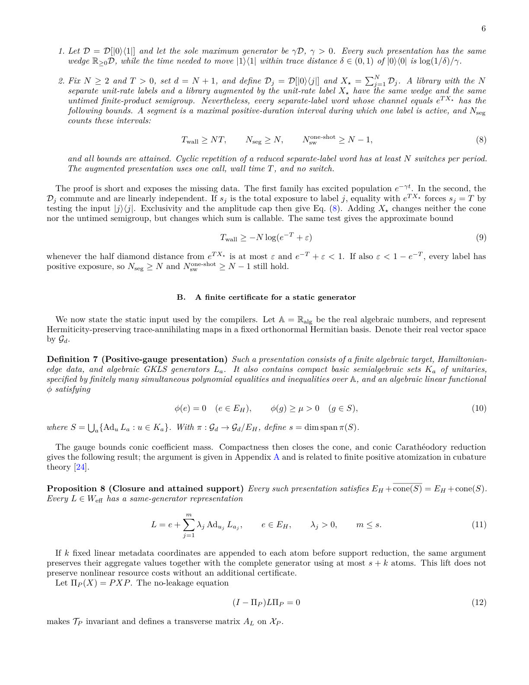
<figcaption class="paper-figure-caption"><b>Fig 5.</b> Low-resolution page preview, page 6</figcaption>
</figure>
</div>

<p><strong>Summary.</strong> This paper develops a rigorous framework to ensure that quantum systems can be robustly stabilized to a target state despite imperfect control pulses and environmental noise. By developing 'complete-path certificates,' the authors move beyond simple generator analysis to provide explicit, quantifiable guarantees on convergence time and final error bounds. This advances the field by bridging the gap between idealized mathematical stability and practical, executable quantum control protocols.</p>
<p><strong>Why it may be interesting.</strong> This work is highly relevant for theoretical physicists working on open quantum systems, as it provides rigorous, physically grounded methods to quantify and guarantee performance under realistic experimental imperfections.</p>
<details>
<summary>Detailed structure</summary>
<p><strong>Main problem.</strong> The paper addresses the gap between theoretically stable quantum control (Lindblad stabilizability) and the practical implementation of such control using imperfect, finite physical operations.</p>
<p><strong>Main result.</strong> They derive checkable conditions based on Lyapunov measures that guarantee robust convergence to a target subspace, providing explicit preparation-time and long-time error bounds for complex physical models.</p>
<p><strong>Method.</strong> The approach involves constructing a 'complete-path certificate' that verifies contraction bounds uniformly over the entire uncertainty set of physical operations, moving beyond simple generator-level analysis.</p>
<p><strong>Model / system.</strong> The analysis is applied to general dissipative dynamics, including pulses, idle intervals, and background noise, exemplified by a four-level cascade model.</p>
<p><strong>Key observables.</strong> Trace distance ($  ext{dtr}$), Lyapunov measure of deviation, contraction bounds ($q_{rob} &lt; 1$), and explicit error bounds (e.g., $    ext{dtr} \le 0.1$).</p>
<p><strong>Important parameters / regimes.</strong> Uncertainty set parameters (amplitude/timing errors), contraction rate, and the structure of the allowed control 'word grammar'.</p>
<p><strong>Assumptions / limitations.</strong> The core assumption is that the physical process must maintain a contraction bound uniformly below one across all possible error realizations, which is a stronger requirement than static stability.</p>
<p><strong>Figures summary.</strong> No specific figure summaries were provided, but the notes reference TABLE I comparing various control model guarantees.</p>
<p><strong>Paper structure.</strong> The paper progresses from defining the physical problem (dissipative dynamics) to establishing static certificates, and finally developing a 'compiler' that constructs robust, finite-path bounds from these static guarantees.</p>
</details>
<details>
<summary>Abstract</summary>
<p>Dissipative dynamics can stabilize a quantum target without providing a reliable sequence of finite control operations. We derive checkable conditions for implementing such stabilization with imperfect controls, with bounds on convergence, errors during operations, and physical cost. The analysis includes pulses, idle intervals, and all simultaneously acting background dynamics. Using a common Lyapunov measure of deviation from the target, we require a contraction bound that remains uniformly below one over the prescribed uncertainty set after accounting for implementation errors. If all allowed paths preserve the target subspace throughout each operation, repeated cycles converge to that subspace from every initial state, even when errors vary between cycles. Comparison with these certified target-preserving paths gives an explicit long-time error bound under bounded leakage. Two single-qubit counterexamples show why a stabilizing average or a stabilizing generator obtained by unitary conjugation does not ensure these path conditions. The certification approach also supports a finite-library search. For a specified four-level cascade model with finite pulses, calibration and timing errors, dephasing, and bounded pumping, this search yields a sequence with an explicit preparation-time bound. For every initial state, it guarantees trace distance at most $0.1$ from the target at the end of preparation and throughout subsequent cycles.</p>
</details>
<p><sub><a href="#top">↑ back to top</a></sub></p>

<p><a id="paper-2610.02473"></a></p>
<h3 id="single-photon-addition-to-multimode-quantum-fields-at-telecom-wavelengths-using-lithium-niobate-and-its-doped-variants"><a href="http://arxiv.org/abs/2610.02473v1">Single-photon addition to multimode quantum fields at telecom wavelengths using lithium niobate and its doped variants</a></h3>
<p><strong>Authors:</strong> Naveen V, Nicolas Treps, Raghavan G, Valentina Parigi, Srinivasan K<br>
<strong>Type:</strong> theory · <strong>Category:</strong> quantum information and computing · <strong>PDF:</strong> <a href="https://arxiv.org/pdf/2610.02473v1">https://arxiv.org/pdf/2610.02473v1</a><br>
<strong>Analysis basis:</strong> full PDF text, analyzed in chunks
<strong>Topic relevance:</strong> <code>interference shaping light</code> <strong>3/5</strong> · <code>Keldysh / 2PI / non-Gaussian methods</code> <strong>2/5</strong> · <code>methods for driven-dissipative</code> <strong>2/5</strong></p>
<div class="figure-strip-hint">↔ Scroll figures horizontally</div>
<div class="paper-figures-scroll">
<figure class="paper-figure-card">
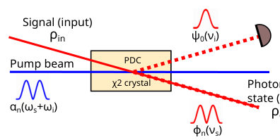
<figcaption class="paper-figure-caption"><b>Fig 1.</b> FIG. 1: Schematic illustration of mode-selective single- photon addition to a multimode quantum field ˆρ. The multimode quantum field ˆρ and a pump field in the HGn mode interact with a nonlinear crystal, generat- ing a single-photon-added multimode quantum field. The photon-addition process is heralded by the detec- tion of a photon in the idler mode.</figcaption>
</figure>
<figure class="paper-figure-card">

<figcaption class="paper-figure-caption"><b>Fig 2.</b> FIG. 2: Phase-matching and group-velocity-matching curves for degenerate collinear type-II PDC in 5% MgO:LN at a crystal temperature of 15◦C, as a func- tion of pump wavelength.</figcaption>
</figure>
<figure class="paper-figure-card">

<figcaption class="paper-figure-caption"><b>Fig 3.</b> FIG. 4: GVM angle, θGVM, as a function of crystal temperature for the 5% MgO crystal. matching angles. We studied the tolerance of the pump wavelength and identified that the Schmidt number K is 1.009 at 776.17 nm and aproaches 1.09 at 786.3 nm. Consequently, the tolerence in the pump wavelength is approximately 10 nm to achieve MSSPA in 5% MgO:LN. The simulation results presented here extend the possi- bility of performing the mode-selective SPA process with MgO:LN at the telecom wavelength.</figcaption>
</figure>
<figure class="paper-figure-card">

<figcaption class="paper-figure-caption"><b>Fig 4.</b> FIG. 5: Phasematching function (PMF) ϕ(ωs, ωi), pump envolope function (PEF) α(ωs, ωi), Joint Spec- tral Amplitude (JSA) for 5% MgO:LN crystal at 15◦C. The pump wavelength is set to λGV M = 778.318 nm with a zero order HG mode of pump FWHM is 10 nm and the crystal length is 10 mm. The Schmidt number obtained from SVD is K = 1.003.</figcaption>
</figure>
<figure class="paper-figure-card">

<figcaption class="paper-figure-caption"><b>Fig 5.</b> FIG. 3: The pump wavelength λGV M as a function of crystal temperatures for the 5% MgO:LN crystal.</figcaption>
</figure>
</div>

<p><strong>Summary.</strong> This paper presents a comprehensive theoretical analysis detailing how to generate single-photon-added, spectro-temporally multimode quantum states using nonlinear crystals like Lithium Niobate. By modeling the parametric down-conversion process, the authors identify optimal doping levels and operational conditions to achieve high-purity quantum states at crucial telecom wavelengths (1550 nm). This work establishes a viable platform for quantum state engineering in integrated photonics.</p>
<p><strong>Why it may be interesting.</strong> This work is highly relevant to quantum optics and open quantum systems as it provides a detailed, materials-specific roadmap for engineering non-Gaussian quantum resources necessary for advanced quantum information protocols.</p>
<details>
<summary>Detailed structure</summary>
<p><strong>Main problem.</strong> The paper addresses the generation of spectro-temporal non-Gaussian quantum states, specifically through single-photon addition (SPA), to multimode quantum fields at telecom wavelengths.</p>
<p><strong>Main result.</strong> The authors established a theoretical framework demonstrating that SPA can be achieved using lithium niobate (LN) and its doped variants, identifying optimal conditions for high spectral purity at 1550 nm.</p>
<p><strong>Method.</strong> The analysis involves detailed theoretical modeling and numerical simulations of the parametric down-conversion (PDC) process, utilizing the Joint Spectral Amplitude (JSA) and the Schmidt number ($K$) as key diagnostics.</p>
<p><strong>Model / system.</strong> The physical platform is nonlinear bulk crystals, specifically Lithium Niobate (LN) and its MgO:LN and ZnO:LN doped variants. The process modeled is Spontaneous Parametric Down-Conversion (PDC), which generates the quantum states.</p>
<p><strong>Key observables.</strong> Joint Spectral Amplitude (JSA), Schmidt number ($K$), signal and idler spectra, and the satisfaction of Phase-Matching and Group Velocity Matching (GVM) conditions.</p>
<p><strong>Important parameters / regimes.</strong> Telecom wavelengths (especially 1550 nm), crystal doping concentrations (e.g., 5% MgO:LN), and temperature variations ($0^\circ	ext{C}$ to $15^\circ	ext{C}$).</p>
<p><strong>Assumptions / limitations.</strong> The analysis relies on theoretical approximations, such as Taylor expansions, and distinguishes between two regimes: those satisfying GVM and those that bypass this strict requirement.</p>
<p><strong>Figures summary.</strong> Figures illustrate the schematic of the quantum state generation, the phase-matching and GVM condition plots for different crystal cuts, and the resulting signal/idler spectra confirming the achievable purity ($K$).</p>
<p><strong>Paper structure.</strong> The paper progresses by first analyzing the general requirements for mode-selective SPA (requiring both phase-matching and GVM), noting limitations in initial materials (congruent LN), and then developing advanced theoretical approaches (noncollinear PDC) to realize the process under optimal conditions for doped LN crystals.</p>
</details>
<details>
<summary>Abstract</summary>
<p>Multimode spectro-temporal non-Gaussian quantum states of light play a crucial role in continuous-variable quantum information processing. In particular, the non-Gaussian quantum states generated through a single-photon addition (SPA) to multimode quantum fields at telecommunication wavelengths constitute a useful resource for quantum technologies. We present a detailed theoretical analysis and numerical simulations of single-photon addition (SPA) and mode-selective single-photon addition (MSSPA) to a multimode quantum field at telecommunication wavelengths. The analysis is performed for congruently grown lithium niobate (LN), $5\%$ MgO-doped lithium niobate (MgO:LN) and various concentrations of ZnO-doped lithium niobate (ZnO:LN) bulk crystals. We investigate MSSPA using type-II parametric down-conversion (PDC) and SPA using the type-I PDC processes. We further present spectro-temporal mode-selective SPA at the telecom wavelength using $5\%$ MgO:LN for temperatures ranging from $0^\circ C$ to $15^\circ C$. In addition, we perform simulations to investigate SPA based on the noncollinear type-I PDC configuration. These theoretical results identify optimal experimental conditions and phase-matching parameters to achieve SPA and mode-selective SPA for LN-based crystals, providing a potential platform for non-Gaussian quantum state engineering at telecommunication wavelengths, mainly at $1550$ nm.</p>
</details>
<p><sub><a href="#top">↑ back to top</a></sub></p>

<p><a id="paper-2610.02454"></a></p>
<h3 id="universal-energy-barrier-for-plastic-flow-in-a-network-glass"><a href="http://arxiv.org/abs/2610.02454v1">Universal energy barrier for plastic flow in a network glass</a></h3>
<p><strong>Authors:</strong> Ibrahim Ghanem, Richard Jana, Wolfram G. Nöhring, Michael Moseler, Lars Pastewka<br>
<strong>Type:</strong> theory · <strong>Category:</strong> disordered systems and neural networks · <strong>PDF:</strong> <a href="https://arxiv.org/pdf/2610.02454v1">https://arxiv.org/pdf/2610.02454v1</a><br>
<strong>Analysis basis:</strong> full PDF text, analyzed in chunks
<strong>Topic relevance:</strong> <code>non-equilibrium universality</code> <strong>3/5</strong> · <code>Frenkel-Kontorova</code> <strong>1/5</strong> · <code>analog quantum simulation</code> <strong>1/5</strong> · <code>methods for driven-dissipative</code> <strong>1/5</strong> · <code>scars &amp; prethermalization</code> <strong>1/5</strong></p>
<div class="figure-strip-hint">↔ Scroll figures horizontally</div>
<div class="paper-figures-scroll">
<figure class="paper-figure-card">

<figcaption class="paper-figure-caption"><b>Fig 1.</b> FIG. 1. Phenomenology of plastic flow. (a) Stress–strain response of an a-C network at 2.7 g cm−3. The dashed gray line marks the mean flow stress (15.2 GPa). (b) Potential, dissipated, and total input energies versus strain. Insets de- fine the plastic stress drop ∆σxy and potential energy drop ∆Epot, respectively.</figcaption>
</figure>
<figure class="paper-figure-card">

<figcaption class="paper-figure-caption"><b>Fig 2.</b> FIG. 2. The making and breaking of a single bond. (a) Hysteresis loop of a reversible bond. Inset shows the potential energy landscape at εapp = 8.4% as a function of bond length. (b) Energy landscapes at selected εapp (vertical gray lines in (a)). The dashed line −fbℓis the common tangent between the two minima of the brown curve at εapp = 10.1%. (c) Energy landscapes after subtraction of the tangent contribution, such that the two minima lie at the same energy. (d) Universal barrier shape function Euniv(ℓ∗) for a-C across all investigated densities. (e) e0 versus ∆ℓ0 for bonds sampled in the plastic flow regime of a-C at 2.7 g cm−3. The solid line indicates a cubic scaling with prefactor...</figcaption>
</figure>
<figure class="paper-figure-card">

<figcaption class="paper-figure-caption"><b>Fig 3.</b> FIG. 3. Statistics of shear transformations in a-C. (a) p(∆ℓ) for bond-breaking (black circles; pb(∆ℓ)) and bond-forming (red crosses; pf(∆ℓ)) events in the plastic flow regime at 2.7 g cm−3. Dashed lines are guides to the eye. The coordinate transformation ∆ℓ→∆ℓ0 maps both distributions onto a single curve p(∆ℓ0), shown in the inset with an exponentially modified Gaussian (EMG) fit as a solid black line. (b) p(∆ℓ0) for all investigated densities. The further transformation ∆ℓ∗ 0 = ∆ℓ0 n1/3</figcaption>
</figure>
<figure class="paper-figure-card">

<figcaption class="paper-figure-caption"><b>Fig 4.</b> FIG. 4. Prediction of the plastic flow stress. Plastic flow stress σF versus density from the microscopic prediction, Eq. (6) (solid orange line) and macroscopic energy dissipation rates (filled blue circles, with error bars showing standard deviations across ten independent realizations per density). Shading marks the ductile (low-density) and brittle (high- density) deformation regimes identified in Fig. 2f. The inset shows σF vanishing at mean coordination ⟨z⟩≈2.33; the ver- tical dashed line marks the network-glass rigidity-percolation threshold at ⟨z⟩≈2.4.</figcaption>
</figure>
</div>

<p><strong>Summary.</strong> This work provides a microscopic theory for plastic flow in amorphous glasses by showing that plasticity is mediated by single covalent bond breaking/forming events. By analyzing the energy barriers of these events, the authors demonstrate that the energy landscape is universal, allowing them to predict the macroscopic plastic flow stress from simple, bond-level parameters.</p>
<p><strong>Why it may be interesting.</strong> While focused on condensed matter plasticity, the use of machine-learned potentials and the concept of universal energy barriers in disordered systems connect to the study of complex energy landscapes found in quantum many-body systems.</p>
<details>
<summary>Detailed structure</summary>
<p><strong>Main problem.</strong> The paper aims to establish the atomic origin and energetics of shear transformations (STs), the fundamental events governing plasticity in amorphous glasses, and link these microscopic rules to macroscopic flow stress.</p>
<p><strong>Main result.</strong> The energy landscapes associated with STs collapse onto a universal shape, and the plastic flow stress can be quantitatively predicted from bond-level quantities using a cubic scaling law.</p>
<p><strong>Method.</strong> The authors used machine-learned interatomic potentials to simulate shear deformation in amorphous carbon, analyzing the energy barriers of single-bond breaking/forming events.</p>
<p><strong>Model / system.</strong> The system studied is amorphous carbon (a-C), modeled as a network glass. The analysis focuses on the energy landscape of a single covalent bond, which is assumed to govern the elementary plastic event.</p>
<p><strong>Key observables.</strong> Plastic flow stress ($\sigma_F$), energy barrier ($E_b$), bond-jump distance ($\Delta\ell$), and the Gini coefficient ($G$) for shear localization.</p>
<p><strong>Important parameters / regimes.</strong> Bond-jump distance ($\Delta\ell_0$), density ($
ho$), and the coordination number ($\langle z 
angle$).</p>
<p><strong>Assumptions / limitations.</strong> Plasticity is governed solely by the breaking or formation of single covalent bonds, and the energy landscape of these events is universal and independent of local structure.</p>
<p><strong>Figures summary.</strong> Figures illustrate the stress-strain response showing stress drops (STs), the collapse of energy landscapes onto a universal curve, and the cubic scaling of the intrinsic barrier with the bond-jump distance.</p>
<p><strong>Paper structure.</strong> The work progresses from identifying STs in the macroscopic stress-strain response to analyzing the universal energy barrier shape, deriving scaling laws for the barrier height, and finally constructing a model that predicts the flow stress from these microscopic bond-level parameters.</p>
</details>
<details>
<summary>Abstract</summary>
<p>Shear transformations are the elementary events of plasticity in glasses and underpin many mesoscopic models of plastic flow, yet their atomic origin and energetics remain difficult to establish. Here we use a machine-learned interatomic potential to show that, in amorphous carbon as a representative network glass, a shear transformation corresponds to the breaking or formation of a single covalent bond. The simplicity of the associated reaction coordinate, the bond length, enables us to extract energy landscapes and barriers. Despite the intrinsic structural disorder, we find that all energy landscapes collapse onto a universal barrier shape. What remains bond-specific is a single scale, the bond-jump distance, which fixes the barrier height through a cubic law. Combined with the activation statistics of shear transformations, this yields a model that predicts the plastic flow stress from independently determined bond-level quantities. Our results provide microscopic support for phenomenological models of plastic flow in glasses and suggest a route towards a quantitative description of amorphous plasticity.</p>
</details>
<p><sub><a href="#top">↑ back to top</a></sub></p>

<p><a id="paper-2610.02310"></a></p>
<h3 id="homological-thresholds-in-randomly-monitored-quantum-error-correcting-codes"><a href="http://arxiv.org/abs/2610.02310v1">Homological Thresholds in Randomly Monitored Quantum Error-Correcting Codes</a></h3>
<p><strong>Authors:</strong> Yoshito Watanabe, Daiki Sasamoto, Bo Han, Simon Trebst<br>
<strong>Type:</strong> theory · <strong>Category:</strong> statistical mechanics · <strong>PDF:</strong> <a href="https://arxiv.org/pdf/2610.02310v1">https://arxiv.org/pdf/2610.02310v1</a><br>
<strong>Analysis basis:</strong> full PDF text, analyzed in chunks
<strong>Topic relevance:</strong> <code>quantum measurements</code> <strong>3/5</strong> · <code>analog quantum simulation</code> <strong>1/5</strong> · <code>driven-dissipative phase transition</code> <strong>1/5</strong> · <code>non-equilibrium universality</code> <strong>1/5</strong></p>
<div class="figure-strip-hint">↔ Scroll figures horizontally</div>
<div class="paper-figures-scroll">
<figure class="paper-figure-card">

<figcaption class="paper-figure-caption"><b>Fig 1.</b> FIG. 1. Tunable-learning and random-measurement phase diagrams. (a) Toric-code tunable-learning phase diagram of Ref. [13], parameterized by the measurement strengths (γX, γY , γZ). The cyan boundary marks the Nishimori learning transition. (b,c) Semi-analytic phase diagrams for the random Pauli-measurement protocol studied here, for (b) the toric code and (c) the color code. The phase boundaries separate regimes in which encoded logical information survives from those in which it is collapsed by the measurements. The measurement probabilities are parameterized as pX = r sin2 θ sin2 ϕ, pY = r cos2 θ, and pZ = r sin2 θ cos2 ϕ, with r = pX +pY +pZ. The boundaries are approximate constructions...</figcaption>
</figure>
<figure class="paper-figure-card">

<figcaption class="paper-figure-caption"><b>Fig 2.</b> FIG. 2. Local structure of logical operators. (a,b) Square-lattice toric code and honeycomb-lattice (6, 6, 6) color code, with repre- sentative noncontractible logical Z operators. Red and blue sym- bols denote X- and Z-type stabilizers, respectively. (c,d) Multipli- cation by local Z stabilizers deforms these representatives without changing their logical action. Toric-code deformations preserve an unbranched-loop description, whereas color-code strings can split and recombine at three-string junctions, producing branched colored- string representations. This contrast underlies ordinary geometric connectivity in the toric code and non-geometric homological con- nectivity in the color code.</figcaption>
</figure>
<figure class="paper-figure-card">

<figcaption class="paper-figure-caption"><b>Fig 3.</b> FIG. 4. Y -assisted logical Z measurement in the toric code. (a) Blue and green markers denote qubits measured in the Z and Y bases, respectively. Up to an irrelevant phase, the product of the cor- responding measured Pauli operators is AvBp1Bp2LZ, thereby im- plementing a logical Z measurement, even though the Z-measured edges alone support no noncontractible Z loop. (b) Schematic pX = 0 section of the logical-survival phase diagram. The blue sliver de- notes the additional logical-Z-measurement regime produced coop- eratively by Y and Z measurements below the Z-only percolation threshold pZ = 1/2, marked by the blue line. Its width is exagger- ated for visibility.</figcaption>
</figure>
<figure class="paper-figure-card">

<figcaption class="paper-figure-caption"><b>Fig 4.</b> FIG. 3. Numerical logical-survival phase diagrams. Phase bound- aries for (a) the toric code and (b) the color code are shown in the positive octant. Red wireframes show the semi-analytic construction from the pure-axis thresholds, while colored symbols show numer- ical boundary estimates obtained from finite-size scaling of the co- herent information. Crosses mark estimates compatible with rc = 1 within uncertainty; the corresponding thermodynamic critical radii may lie slightly below unity (see text). (c) Representative planar cuts. (d) The fitted scaling exponent ν along the same cuts as a func- tion of the in-plane angle α, oriented as indicated in (a,b).</figcaption>
</figure>
<figure class="paper-figure-card">

<figcaption class="paper-figure-caption"><b>Fig 5.</b> FIG. 5. Geometric versus homological connectivity in the color code. Z-measured qubits are shown in blue. (a) The two measured qubits directly connect the same-color plaquettes u and v, giving the direct link u ∼v. (b) The direct links u ∼w and w ∼v con- nect u and v through an ordinary geometric path on the same-color triangular sublattice. (c) No direct link is present among u, v, and w. Nevertheless, multiplying the measured Pauli product by the two outlined plaquette stabilizers BsBw deforms its support into the di- rect connection shown in (a). Thus u and v are homologically but not geometrically connected.</figcaption>
</figure>
</div>

<p><strong>Summary.</strong> This work analyzes how quantum error-correcting codes fail when subjected to random monitoring measurements. It establishes that the failure mechanism can be classified into two distinct types of percolation transitions: geometric and homological. This provides a powerful, unified theoretical framework for understanding the robustness of topological quantum computation.</p>
<p><strong>Why it may be interesting.</strong> It connects the abstract concepts of topological order and quantum error correction thresholds directly to well-established concepts in statistical mechanics, such as percolation theory and critical phenomena.</p>
<details>
<summary>Detailed structure</summary>
<p><strong>Main problem.</strong> The paper investigates the robustness of quantum error-correcting codes when subjected to random single-qubit Pauli measurements, mapping this process to critical phenomena.</p>
<p><strong>Main result.</strong> The threshold behavior for code failure falls into two distinct categories: geometric and homological percolation transitions, exemplified by the toric and color codes, respectively.</p>
<p><strong>Method.</strong> The analysis uses algebraic and homological methods, mapping logical information loss to the criteria for noncontractible loops, and employs numerical simulations to determine critical exponents.</p>
<p><strong>Model / system.</strong> The system studied is stabilizer quantum error-correcting codes (e.g., toric code, color code) defined on lattices, whose stability is tested by random Pauli measurements.</p>
<p><strong>Key observables.</strong> Threshold probability for logical subspace collapse, critical exponents, and the logical-support criteria.</p>
<p><strong>Important parameters / regimes.</strong> Measurement probabilities ($p_X, p_Y, p_Z$), lattice structure (square vs. honeycomb), and system size (up to one million qubits).</p>
<p><strong>Assumptions / limitations.</strong> The analysis relies on mapping the monitoring process to logical support criteria, and phase diagrams are based on analytically obtained pure-axis thresholds.</p>
<p><strong>Figures summary.</strong> Figures illustrate tunable-learning and random-measurement phase diagrams for the toric and color codes, showing logical survival versus collapse regimes, and depict the algebraic structure of logical operators.</p>
<p><strong>Paper structure.</strong> The paper systematically analyzes the failure mechanisms of different codes under measurement, distinguishing between geometric and homological failure modes, and extends the framework to various code types.</p>
</details>
<details>
<summary>Abstract</summary>
<p>Random projective measurements are an effective tool to model the interlinked phenomenology of monitoring, inferring, and decoding highly entangled states such as quantum error-correcting codes. At the same time, the study of such monitored dynamics has opened a new arena for critical phenomena, renewing longstanding questions in disordered statistical mechanics, including percolation, random-bond models, and Nishimori physics. Here we investigate the robustness of stabilizer quantum error-correcting codes under a single round of independently sampled single-qubit Pauli measurements and demonstrate that their threshold behavior falls into two broad categories - geometric and homological percolation transitions, with the toric code and color code being the principal examples for each class. We establish the distinct character of these two threshold theories by analyzing the logical-support criteria of these codes and by providing numerical estimates of their respective critical exponents obtained from optimized stabilizer simulations of large-scale systems with over one million qubits. Our framework extends to non-CSS, subsystem, higher-dimensional, and Floquet stabilizer codes and allows us to determine their respective threshold phase diagrams. We exemplify how the latter provide quantitative and qualitative guidance for the computationally more demanding problems of tunable learning and maximum-likelihood decoding. As a practical application of our framework, we discuss the robustness of the gross code.</p>
</details>
<p><sub><a href="#top">↑ back to top</a></sub></p>

<p><a id="paper-2610.03513"></a></p>
<h3 id="melting-phase-diagram-of-the-two-dimensional-electron-solid-in-a-perpendicular-magnetic-field"><a href="http://arxiv.org/abs/2610.03513v1">Melting phase diagram of the two-dimensional electron solid in a perpendicular magnetic field</a></h3>
<p><strong>Authors:</strong> M. Yu. Melnikov, D. G. Smirnov, A. A. Shashkin, S. -H. Huang, C. ~W. Liu, S. V. Kravchenko<br>
<strong>Type:</strong> experiment · <strong>Category:</strong> strongly correlated electrons · <strong>PDF:</strong> <a href="https://arxiv.org/pdf/2610.03513v1">https://arxiv.org/pdf/2610.03513v1</a><br>
<strong>Analysis basis:</strong> full PDF text, analyzed in chunks
<strong>Topic relevance:</strong> <code>analog quantum simulation</code> <strong>3/5</strong> · <code>Frenkel-Kontorova</code> <strong>2/5</strong> · <code>scars &amp; prethermalization</code> <strong>1/5</strong></p>
<div class="figure-strip-hint">↔ Scroll figures horizontally</div>
<div class="paper-figures-scroll">
<figure class="paper-figure-card">

<figcaption class="paper-figure-caption"><b>Fig 1.</b> FIG. 2. The melting temperature as a function of electron density in different magnetic fields. The dashed lines are guides to the eye. The expected dependence of the tempera- ture on the plateau Tp(ns) ∝n1/4 s with a fitting parameter l is shown by the solid line. The inset shows the low-ns region on an expanded scale.</figcaption>
</figure>
<figure class="paper-figure-card">

<figcaption class="paper-figure-caption"><b>Fig 2.</b> FIG. 1. (a) Voltage-current characteristics in a magnetic field of 4 T at a temperature of 30 mK at electron densities (in units of 1010 cm−2, left to right): 2.94, 2.85, 2.81, 2.78, 2.76, 2.67, 2.58, 2.49. (b) Voltage-current characteristics in a magnetic field of 4 T at a temperature of 387 mK at electron densities (in units of 1010 cm−2, left to right): 0.99, 0.94, 0.90, 0.88, 0.85, 0.81, 0.72, 0.63. Also shown are the dynamic threshold Vd obtained by the extrapolation (dotted line) of the linear part of the V -I curves to zero current and the static threshold Vs. The dashed lines are fits to the data, see text.</figcaption>
</figure>
</div>

<p><strong>Summary.</strong> This work experimentally maps the thermal melting phase diagram of a 2D electron solid in a perpendicular magnetic field. By analyzing voltage-current characteristics, the researchers confirm that the magnetic field stabilizes the solid phase. Most notably, they observe a plateau in the melting temperature versus density curve, which they interpret as evidence of resonance modes within the crystalline structure.</p>
<p><strong>Why it may be interesting.</strong> The study of melting transitions and correlated states in 2D electron systems is fundamental to understanding strongly correlated electron physics, which shares conceptual links with many-body dynamics in AMO systems.</p>
<details>
<summary>Detailed structure</summary>
<p><strong>Main problem.</strong> The study aims to determine the thermal melting phase diagram of a two-dimensional electron solid.</p>
<p><strong>Main result.</strong> The magnetic field increases the melting temperature, and the melting temperature exhibits an unexpected plateau as a function of electron density, which is attributed to resonance modes in the crystallites.</p>
<p><strong>Method.</strong> Measurements involve analyzing the onset density of double-threshold voltage-current (I-V) curves in the insulating state of a 2D electron system.</p>
<p><strong>Model / system.</strong> The physical system is a two-dimensional electron system confined in SiGe/Si/SiGe quantum wells, which is studied under perpendicular magnetic fields. The theoretical framework involves modeling the electron solid, potentially as a Wigner crystal.</p>
<p><strong>Key observables.</strong> Onset density of double-threshold V-I curves, melting temperature ($T_c$), and the dependence of $T_c$ on magnetic field and electron density.</p>
<p><strong>Important parameters / regimes.</strong> Temperature (T), perpendicular magnetic field (B), and electron density ($n_s$).</p>
<p><strong>Assumptions / limitations.</strong> The analysis adapts a phenomenological theory of the collective depinning of elastic structures, and the plateau is interpreted via resonance modes in the crystallites.</p>
<p><strong>Figures summary.</strong> Figure 1 shows typical V-I characteristics at different temperatures and densities, illustrating the two-threshold behavior. Figure 2 shows the melting temperature ($T_c$) dependence on electron density, highlighting the plateau region.</p>
<p><strong>Paper structure.</strong> The paper establishes the physical system and the diagnostic tool (double-threshold V-I curves). It presents results showing magnetic field dependence, confirming theoretical predictions, and then focuses on the unexpected plateau in $T_c$ vs. $n_s$, interpreting it via resonance modes.</p>
</details>
<details>
<summary>Abstract</summary>
<p>We determine the thermal melting phase diagram of the electron solid by measuring the onset density of the double-threshold voltage-current curves in the insulating state in the ultra-high mobility two-dimensional electron system in SiGe/Si/SiGe quantum wells at different temperatures in perpendicular magnetic fields. The introduction of a magnetic field leads to a considerable increase in the onset density, which is strongest at the lowest temperatures and decreases with increasing temperature, and the melting temperature increases with magnetic field. These data are in agreement with theoretical predictions. Unexpectedly, the melting temperature as a function of electron density in a fixed magnetic field reveals a plateau, which can be interpreted in terms of resonance modes in the crystallites.</p>
</details>
<p><sub><a href="#top">↑ back to top</a></sub></p>

<p><a id="paper-2610.03355"></a></p>
<h3 id="stochastic-thermodynamics-and-predictability-of-ornstein-uhlenbeck-processes-an-application-to-the-madden-julian-oscillation"><a href="http://arxiv.org/abs/2610.03355v1">Stochastic thermodynamics and predictability of Ornstein-Uhlenbeck processes: an application to the Madden-Julian Oscillation</a></h3>
<p><strong>Authors:</strong> Roberta Benincasa, Danni Du, Gregory S. Duane, Jeffrey B. Weiss<br>
<strong>Type:</strong> theory · <strong>Category:</strong> statistical mechanics · <strong>PDF:</strong> <a href="https://arxiv.org/pdf/2610.03355v1">https://arxiv.org/pdf/2610.03355v1</a><br>
<strong>Analysis basis:</strong> full PDF text, analyzed in chunks
<strong>Topic relevance:</strong> <code>non-equilibrium universality</code> <strong>3/5</strong> · <code>Keldysh / 2PI / non-Gaussian methods</code> <strong>1/5</strong> · <code>driven-dissipative phase transition</code> <strong>1/5</strong> · <code>methods for driven-dissipative</code> <strong>1/5</strong></p>
<div class="figure-strip-hint">↔ Scroll figures horizontally</div>
<div class="paper-figures-scroll">
<figure class="paper-figure-card">

<figcaption class="paper-figure-caption"><b>Fig 1.</b> FIG. 1. Parameter space diagram. Regimes are clas- sified in terms of |λ| and δ. The colorbar shows ˜ω in the rotational regime (˜ω ∈R), corresponding to oscilla- tory solutions. The solid curve denotes ˜ω2 = 0, sepa- rating rotational and diffusive regimes, while the dashed curve marks the onset of visually discernible oscillations (˜ω = 0.5). The temporal evolution of MJO parameters over the 20th century is also shown.</figcaption>
</figure>
<figure class="paper-figure-card">

<figcaption class="paper-figure-caption"><b>Fig 2.</b> FIG. 2. Dependence of entropy production and ACC on λ and δ. Panels show the time evolution of ⟨σe t ⟩e (a–b) and the ACC (c–d). The first column varies δ at fixed λ, and the second varies λ at fixed δ. Time is scaled as ˜t = t/τ. Insets show the corresponding locations in parameter space across all regimes.</figcaption>
</figure>
<figure class="paper-figure-card">

<figcaption class="paper-figure-caption"><b>Fig 3.</b> FIG. 3. Scheme of the comparison between the LIM, the CSF-20C, and the CERA-20C. The 0th</figcaption>
</figure>
<figure class="paper-figure-card">

<figcaption class="paper-figure-caption"><b>Fig 4.</b> FIG. 4. MJO phase space trajectories. 46-day RMMI trajectories from CERA-20C, from the LIM fore- cast built on the 0th member of CERA-20C ensemble and CSF-20C. Panel (a) shows trajectories initialized on February 1st, 1994, while panel (b) those initialized on November 1st of the same year. MJO events are defined by amplitudes greater than one (gray circle).</figcaption>
</figure>
<figure class="paper-figure-card">

<figcaption class="paper-figure-caption"><b>Fig 5.</b> FIG. 5. Potential predictability according to the two forecasts. ACC (a,e), phase error (b,f), amplitude error (c,g), and RMSE (d,h) of the ensemble-mean forecast against each ensemble member taken alternatively as truth. Full pink line: LIM forecast from the 0th CERA-20C member; dashed blue line: CSF-20C. In the phase error plot, the full line is the smoothed version of the corresponding dashed line. The phase error is computed only when the starting amplitude of the reanalysis is larger than 1. The lead time after which the correlation score first goes below 0.6 is shown in both plots. Dashed lines in the RMSE plots refer to the maximum value for the LIM obtained as p</figcaption>
</figure>
</div>

<p><strong>Summary.</strong> This paper links climate predictability to nonequilibrium thermodynamics by developing a stochastic framework for OU processes. It shows that for systems like the MJO, predictability is governed by the path action, even when other thermodynamic measures like irreversibility increase. This suggests stochastic thermodynamics offers a powerful lens for analyzing complex, out-of-equilibrium geophysical phenomena.</p>
<p><strong>Why it may be interesting.</strong> The application of fluctuation theorems and stochastic thermodynamics to macroscopic, non-equilibrium systems like climate dynamics provides a powerful theoretical tool for understanding predictability limits in complex physical systems.</p>
<details>
<summary>Detailed structure</summary>
<p><strong>Main problem.</strong> The paper investigates the fundamental connection between the predictability of out-of-equilibrium climate oscillations and their underlying nonequilibrium thermodynamic properties.</p>
<p><strong>Main result.</strong> The path action, rather than irreversibility or dynamical activity, is found to be the most direct predictor of forecast skill (ACC) for systems like the MJO. The MJO exhibits increased predictability alongside increased irreversibility and activity.</p>
<p><strong>Method.</strong> The authors develop and apply a coarse-grained stochastic thermodynamic framework to Ornstein-Uhlenbeck (OU) processes, analyzing their dynamics using concepts like entropy production and path action.</p>
<p><strong>Model / system.</strong> The model uses the multivariate OU stochastic differential equation, focusing on 2D dynamics with even variables, and applies this framework to analyze climate indices, specifically the Madden-Julian Oscillation (MJO).</p>
<p><strong>Key observables.</strong> Predictability (Anomaly Correlation Coefficient, ACC), Entropy Production ($\sigma$), Dynamical Activity ($\phi$), and Path Action ($\alpha$).</p>
<p><strong>Important parameters / regimes.</strong> Two diffusivities and a phase-space rotation characterize the coordinate-invariant dynamics of the 2D OU process.</p>
<p><strong>Assumptions / limitations.</strong> The analysis is restricted to 2D OU dynamics with even variables, and the framework treats climate change as a succession of steady-states.</p>
<p><strong>Paper structure.</strong> The paper first develops the stochastic thermodynamic framework for OU processes, then analyzes the reduced parameter space using coordinate-invariant properties, and finally applies the entire methodology to the Madden-Julian Oscillation (MJO).</p>
</details>
<details>
<summary>Abstract</summary>
<p>Climate oscillations are intrinsically out-of-equilibrium phenomena, yet the connection between their predictability and nonequilibrium thermodynamic properties remains unexplored. We develop a coarse-grained stochastic thermodynamic framework for Ornstein-Uhlenbeck (OU) processes and apply this framework to climate data via linear inverse models (LIMs), linking predictability, entropy production, dynamical activity, and path action. Climate oscillations are often studied in a 2d phase space of climate indices, which are even under time-reversal, motivating our focus on 2d OU dynamics with even variables. We find that coordinate-invariant properties of 2d OU processes can be reduced to a minimal three-parameter description: two diffusivities and a phase-space rotation. We show that these quantities fundamentally characterize distinct aspects of the dynamics. We find that higher irreversibility and dynamical activity do not necessarily imply reduced predictability. Rather, it is the path action which is most closely connected to a commonly used measure of predictability, the anomaly correlation coefficient (ACC). As an illustrative example, we apply this framework to the Madden-Julian Oscillation (MJO) over the twentieth century. We find that the MJO has become simultaneously more predictable, as seen previously, while at the same time becoming more irreversible and more active. Predictability is driven predominantly by the reduced mean diffusion. Entropy production reflects the combined evolution of all three parameters. These results suggest that stochastic thermodynamics provides a powerful lens for studying nonequilibrium climate phenomena.</p>
</details>
<p><sub><a href="#top">↑ back to top</a></sub></p>

<p><a id="paper-2610.02883"></a></p>
<h3 id="structural-crossover-of-complex-networks-bridging-degree-correlation-and-fractality"><a href="http://arxiv.org/abs/2610.02883v1">Structural crossover of complex networks: bridging degree correlation and fractality</a></h3>
<p><strong>Authors:</strong> Shogo Mizutaka, Jun Yamamoto, Kousuke Yakubo<br>
<strong>Type:</strong> theory · <strong>Category:</strong> statistical mechanics · <strong>PDF:</strong> <a href="https://arxiv.org/pdf/2610.02883v1">https://arxiv.org/pdf/2610.02883v1</a><br>
<strong>Analysis basis:</strong> full PDF text, analyzed in chunks
<strong>Topic relevance:</strong> <code>non-equilibrium universality</code> <strong>3/5</strong> · <code>analog quantum simulation</code> <strong>2/5</strong> · <code>driven-dissipative phase transition</code> <strong>1/5</strong></p>
<div class="figure-strip-hint">↔ Scroll figures horizontally</div>
<div class="paper-figures-scroll">
<figure class="paper-figure-card">

<figcaption class="paper-figure-caption"><b>Fig 1.</b> FIG. 1. Distance dependence of the ball volume ˜νk(l). The abscissa l represents the distance from a root node of degree k. Symbols show simulation results for critical scale-free random networks with γ = 3.75 and 4.25 and for Erd˝os-R´enyi random graphs. Lines represent the theoretical prediction ˜νk(l) = kl+c lDf −1(l−1) with Df = (γ −2)/(γ −3) for 3 &lt; γ &lt; 4 and Df = 2 for γ ≥4. In the numerical calculation, we generated 103 networks with 107 nodes. For scale-free networks with γ = 4.25 and Erd˝os-R´enyi random graphs, we sampled a node with degree k from each network. For γ = 3.75, we sampled a node with degree in [k −2, k + 2] from each network.</figcaption>
</figure>
<figure class="paper-figure-card">

<figcaption class="paper-figure-caption"><b>Fig 2.</b> FIG. 2. Scaling collapse of the rescaled ball volume, demonstrating the degree-dependent crossover predicted by Eq. (17). Rescaled ball volume F(l) ≡˜νk(l)/[clDf −1(l −1)] is plotted as a function of the rescaled distance x ≡l/lco(k) with lco(k) = (k/c)1/(Df −1) for (a) scale-free networks with γ = 3.75 and (b) those with γ = 4.25. Symbols correspond to different root degrees k. Red dashed lines indicate the theo- retical behaviors F[l(x)] ∝x1−Df for x ≪1 and F[l(x)] ∝x0</figcaption>
</figure>
<figure class="paper-figure-card">

<figcaption class="paper-figure-caption"><b>Fig 3.</b> FIG. 3. Residual ball volume ˜vk(l) ≡˜νk(l)−clDf −1(l −1) as a function of distance l for the skeletons of (a) a protein in- teraction network of yeast and (b) a protein-folding network. Here, ˜νk(l) is the measured average volume from a root node of degree k, and Df and c are estimated from the data. In both panels, open and filled symbols correspond to k = 4 and k = 2, respectively. The dashed line is a visual guide.</figcaption>
</figure>
<figure class="paper-figure-card">

<figcaption class="paper-figure-caption"><b>Fig 4.</b> FIG. 4. Decomposition of the ball volume in critical Erd˝os–R´enyi random graphs with mean degree z1 = 1. (a) Ball volume ˜νk(l) as a function of distance l for root node degrees k = 2 (filled circles) and k = 8 (open circles). The dashed and dotted lines show the exact expression ˜νk(l) = kl + l(l −1)/2 for k = 2 and 8, respectively. (b) Fractal contribution obtained by subtracting the linear term, ˜νk(l) −kl. Data for both root degrees collapse onto the exact result l(l −1)/2 (dashed line). (c) Linear contribution obtained by subtracting the fractal term, ˜νk(l) −l(l −1)/2. The dashed and dotted lines represent kl for k = 2 and 8, respectively. (d) Scaling collapse of ˜νk(l)/[l(l −1)/2] as...</figcaption>
</figure>
<figure class="paper-figure-card">

<figcaption class="paper-figure-caption"><b>Fig 5.</b> FIG. 5. Extraction of the linear contribution in the ball volumes of critical scale-free random networks. Filled and open circles represent the results for (γ, k) = (3.75, 70) and (4.25, 30), respectively. (a) Ratio [˜νk(l) −kl]/[lDf −1(l −1)] used to estimate the coefficient c, with Df = 2.33 and 2 for γ = 3.75 and 4.25, respectively. The approximate plateaus identify the values of c used in the scaling analysis. (b) Residual volume ˜vk(l) after subtracting the fractal contribution. The dashed guide demonstrates the remaining degree-dependent linear term kl.</figcaption>
</figure>
</div>

<p><strong>Summary.</strong> This paper analyzes the structural crossover in scale-free random networks, showing that the growth of the local volume exhibits a transition from a degree-dependent linear regime to a global fractal regime. This crossover is theoretically derived using critical branching processes and is successfully validated by applying the model to real-world biological networks.</p>
<p><strong>Why it may be interesting.</strong> While focused on network theory, the concept of structural crossover governed by scaling laws and critical phenomena is highly relevant to understanding phase transitions and connectivity in complex quantum systems or disordered quantum materials.</p>
<details>
<summary>Detailed structure</summary>
<p><strong>Main problem.</strong> The paper investigates the structural crossover in complex networks, specifically bridging the relationship between long-range degree correlations and network fractality.</p>
<p><strong>Main result.</strong> The average ball volume exhibits a structural crossover: $\tilde{\nu}_k(l) \sim k l$ at short distances and $\tilde{\nu}_k(l) \sim l^{D_f}$ at large distances.</p>
<p><strong>Method.</strong> The analysis involves deriving the ball volume $\tilde{\nu}_k(l)$ using the configuration model and relating it to critical branching processes.</p>
<p><strong>Model / system.</strong> The study focuses on scale-free random networks near the percolation threshold, and extends the findings to empirical fractal networks like protein interaction networks.</p>
<p><strong>Key observables.</strong> Ball volume $\tilde{\nu}_k(l)$, structural crossover length $l_{co}(k)$, and the fractal dimension $D_f$.</p>
<p><strong>Important parameters / regimes.</strong> Degree exponent $\gamma$, distance $l$, and the crossover length $l_{co}(k) \sim k^{1/(D_f-1)}$.</p>
<p><strong>Assumptions / limitations.</strong> The analysis relies on the critical limit near the percolation threshold and assumes the network structure can be decomposed into linear and fractal components.</p>
<p><strong>Figures summary.</strong> Figures show numerical confirmation of the crossover in scale-free random networks and demonstrate the linear growth term in the residual ball volume for both theoretical and empirical protein networks.</p>
<p><strong>Paper structure.</strong> The paper develops the theoretical framework by deriving the ball volume $\tilde{\nu}_k(l)$ and predicting the crossover. It then confirms this prediction using critical branching process interpretations, followed by numerical verification on both synthetic scale-free graphs and real-world biological networks.</p>
</details>
<details>
<summary>Abstract</summary>
<p>We investigate the relationship between long-range degree correlations and fractality in scale-free random networks. By analyzing degree correlations in scale-free random networks at the percolation threshold, at which a giant component emerges, we derive the ball volume $\tildeν_k(l)$, defined as the average number of nodes within distance $l$ from a root node with degree $k$. The resulting expression predicts a degree-dependent structural crossover. For $l\ll k^{1/(\df-1)}$, the ball volume grows as $\tildeν_k(l)\sim kl$, whereas for $l\gg k^{1/(\df-1)}$, it crosses over to the global fractal scaling $\tildeν_k(l)\sim l^{\df}$. Here, $\df$ is the fractal dimension of critical scale-free random networks. We further show that the structural crossover can be naturally understood in terms of critical branching processes and is also observed in empirical fractal networks.</p>
</details>
<p><sub><a href="#top">↑ back to top</a></sub></p>

<p><a id="paper-2610.03507"></a></p>
<h3 id="ab-initio-greens-function-theory-of-superfluid-neutron-matter"><a href="http://arxiv.org/abs/2610.03507v1">Ab initio Green's function theory of superfluid neutron matter</a></h3>
<p><strong>Authors:</strong> F. Marino, W. G. Jiang, C. Barbieri, G. Colò<br>
<strong>Type:</strong> theory · <strong>Category:</strong> quantum gases · <strong>PDF:</strong> <a href="https://arxiv.org/pdf/2610.03507v1">https://arxiv.org/pdf/2610.03507v1</a><br>
<strong>Analysis basis:</strong> full PDF text, analyzed in chunks
<strong>Topic relevance:</strong> <code>Keldysh / 2PI / non-Gaussian methods</code> <strong>3/5</strong> · <code>analog quantum simulation</code> <strong>1/5</strong> · <code>methods for driven-dissipative</code> <strong>1/5</strong></p>
<div class="figure-strip-hint">↔ Scroll figures horizontally</div>
<div class="paper-figures-scroll">
<figure class="paper-figure-card">

<figcaption class="paper-figure-caption"><b>Fig 1.</b> Figure 1. Two-dimensional representation of the spectral function (1) obtained by varying the momentum k and energy E = µ + ℏω. The top panel displays neutron matter in the normal-liquid regime (at Fermi momentum kF = 1.4 fm−1), while in the bottom panel (kF = 0.6 fm−1) the system is in the superfluid phase. The squared spectroscopic amplitudes |Uq k|2 and |Vq k|2 are shown for poles above and below the Fermi level E = µ, respectively. The corresponding color scales are displayed alongside each panel. The Fermi momentum kF and chemical potential µ are indicated by dot-dashed and dashed lines, respectively. For kF = 0.6 fm−1, continuous lines show fits of the spectral function obtained with...</figcaption>
</figure>
<figure class="paper-figure-card">

<figcaption class="paper-figure-caption"><b>Fig 2.</b> Figure 2. Pairing gaps as functions of the Fermi momentum predicted at different approximation levels. Fit errors are reported as shaded bands. The ∆NNLOGO(394) potential from Ref. [54] is used. See text.</figcaption>
</figure>
<figure class="paper-figure-card">

<figcaption class="paper-figure-caption"><b>Fig 3.</b> Figure 3. Pairing gaps as functions of the Fermi momen- tum. Calculations at the ADC(3) level are reported for the ∆NNLOGO(394) and ∆NNLOGO(450) potentials from Ref. [54] and the NNLOsat(450) interaction. The shaded bands account for the uncertainties stemming both from the many-body truncation, estimated as the deviation between ADC(3) and ADC(ld,2) predictions, and the fit errors. Lines are a guide to the eye.</figcaption>
</figure>
<figure class="paper-figure-card">

<figcaption class="paper-figure-caption"><b>Fig 4.</b> Figure 4. Energy per particle in units of the free Fermi gas energy EF G = 3/5EF , where EF = (ℏkF )2/(2m). Results are obtained with the NNLOsat(450) interaction [39]. Empty triangles denote extrapolations from the CCD energies (full triangles). The gray shaded area corresponds to the region where ADC(3) pairing gaps (shown in Fig. 3) satisfy ∆/EF &gt; 0.2.</figcaption>
</figure>
</div>

<p><strong>Summary.</strong> This work develops an ab initio Green's function theory to study superfluid neutron matter, crucial for understanding neutron stars. By employing the nonperturbative Gorkov-ADC method, the authors calculate the equation of state and pairing gaps across all relevant densities. The key finding is the quantitative renormalization of the pairing gap when moving beyond simple mean-field approximations.</p>
<p><strong>Why it may be interesting.</strong> While focused on nuclear matter, the use of advanced diagrammatic techniques (like ADC) to calculate pairing gaps and spectral functions in a strongly interacting, superfluid system shares methodological parallels with BCS theory applied to ultracold Fermi gases.</p>
<details>
<summary>Detailed structure</summary>
<p><strong>Main problem.</strong> To provide a precise, quantitative understanding of superfluid neutron matter, particularly the pairing gaps, which has been hindered by uncontrolled many-body approximations.</p>
<p><strong>Main result.</strong> The Gorkov-ADC method successfully quantifies the pairing gap and equation of state across density regimes, showing that beyond-mean-field corrections renormalize the gap compared to simpler approximations.</p>
<p><strong>Method.</strong> The study employs the nonperturbative Gorkov algebraic diagrammatic construction (ADC) method within the Green's function formalism to calculate self-energies and spectral functions.</p>
<p><strong>Model / system.</strong> The system is homogeneous neutron matter, relevant to the inner crust of neutron stars, modeled using realistic chiral Hamiltonians and analyzed across varying densities (Fermi momentum $k_F$).</p>
<p><strong>Key observables.</strong> Equation of state (EOS), single-particle spectral functions, and the pairing gap ($\Delta$).</p>
<p><strong>Important parameters / regimes.</strong> Fermi momentum ($k_F$), density, and the comparison between different many-body approximation levels (HFB vs. ADC(3)).</p>
<p><strong>Assumptions / limitations.</strong> The analysis relies on the Gorkov formalism and involves approximations like the third-order ADC ($  ext{ADC}(3)$) and renormalization techniques to handle dynamical and pairing correlations.</p>
<p><strong>Figures summary.</strong> Figures illustrate the spectral function transition from normal to superfluid regimes, plot the pairing gap ($\Delta$) versus Fermi momentum for various approximations, and compare the energy per particle across different theoretical frameworks.</p>
<p><strong>Paper structure.</strong> The paper develops the Gorkov equation framework, compares results from HFB theory to beyond-mean-field theories (ADC(3)), and demonstrates how the pairing gap is renormalized by dynamical correlations, providing a unified description from dilute to saturation density.</p>
</details>
<details>
<summary>Abstract</summary>
<p>At the low densities encountered in the inner crust of neutron stars, neutron matter becomes superfluid, directly influencing macroscopic phenomena such as star cooling. However, a precise quantitative understanding of this system has been hindered by uncontrolled many-body approximations. In this letter, we exploit the nonperturbative Gorkov algebraic diagrammatic construction method to provide a unified ab initio description of the equation of state and the single-particle spectral functions of homogeneous neutron matter, spanning from the dilute regime to saturation density. We identify clear microscopic signatures of superfluidity in the excitation spectrum and quantify the pairing gaps associated with realistic chiral Hamiltonians, estimating for the first time their sensitivity to the many-body truncation. Our robust handling of both dynamical and pairing correlations paves the way for exploring electroweak processes across the regimes relevant to neutron stars.</p>
</details>
<p><sub><a href="#top">↑ back to top</a></sub></p>
<hr>
<p>
<a href="index.html">← Index</a>
 · <a href="papers_01.html">← Previous</a> · <a href="papers_03.html">Next →</a>
</p>
<hr>

</body>
</html>
